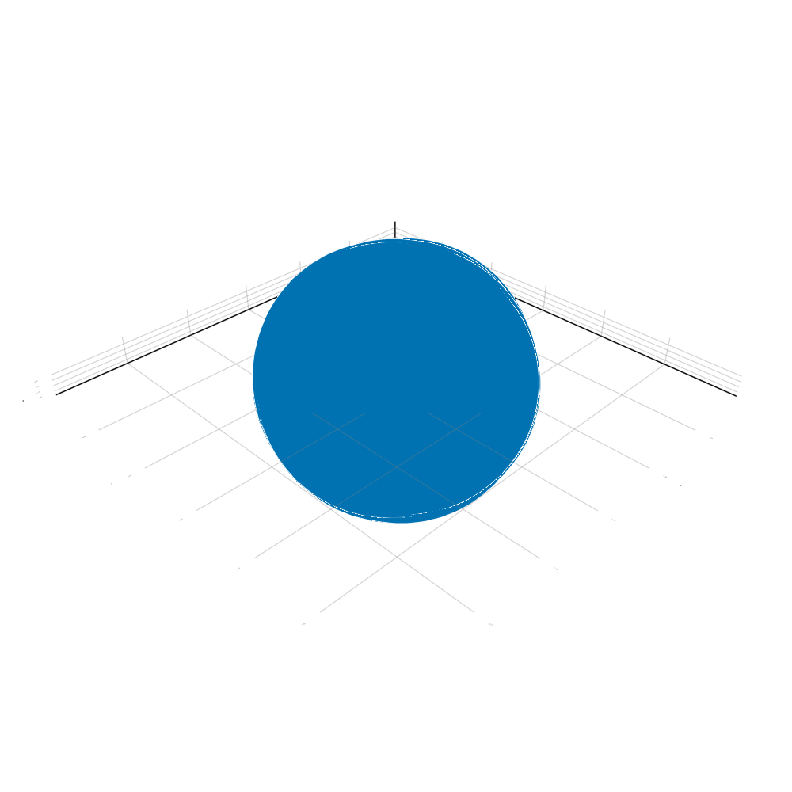

Basic
Before working on a simulation, it is recommanded to be familiar with dependencies of AstroNbodySim.jl
The whole project is well documented. Use help? in REPL is the fastest way to get help if you forget the arguments or keywords of interfaces. For example,
julia> using AstroIO
help?> read_gadget2
search: read_gadget2 read_gadget2_pos read_gadget2_jld
read_gadget2(filename::AbstractString, units, fileunits = uGadget2; kw...)
Return a Tuple of header and particle data in snapshot file.
units is supported by PhysicalParticles: uSI, uCGS, uAstro,
uGadget2, nothing. fileunits is the internal units in the file,
and will be converted to units while reading the file.
Keywords
≡≡≡≡≡≡≡≡≡≡
• acc::Bool = false : read acceleration data if exist
• pot::Bool = false : read potential data if existPhysical vectors and particles
julia> # PhysicalParticles defines the basic physical vector and particle type using PhysicalParticlesjulia> # Set the default units to astrophysics. See `Unitful.preferunits` for more info astro()julia> # using UnitfulAstro is necessary, if you are using astrophysical units using UnitfulAstrojulia> # Define a physical vector a = PVector(3.0u"kpc", 4.0u"kpc", 12.0u"kpc")PVector(3.0 kpc, 4.0 kpc, 12.0 kpc)julia> b = PVector(1.0, 1.0, 1.0, u"kpc")PVector(1.0 kpc, 1.0 kpc, 1.0 kpc)julia> c = PVector2D()PhysicalParticles.PVector2D{Float64}(0.0, 0.0)julia> d = PVector2D(0.0, 1.0)PhysicalParticles.PVector2D{Float64}(0.0, 1.0)julia> # Basic algebra a * b19.0 kpc^2julia> c + dPhysicalParticles.PVector2D{Float64}(0.0, 1.0)julia> norm(a)13.0 kpcjulia> normalize(a)PVector(0.23076923076923078 kpc, 0.3076923076923077 kpc, 0.9230769230769231 kpc)julia> # generate an array of physical vector points = rand(PVector{Float64}, 5) * u"kpc"5-element Vector{PhysicalParticles.PVector{Unitful.Quantity{Float64, 𝐋, Unitful.FreeUnits{(kpc,), 𝐋, nothing}}}}: PVector(0.46987241315901884 kpc, 0.02946587768578479 kpc, 0.6236805454450861 kpc) PVector(0.2777406592585857 kpc, 0.48062848424408977 kpc, 0.2911250847765603 kpc) PVector(0.6238651203685839 kpc, 0.006924492856938191 kpc, 0.11811695895372054 kpc) PVector(0.8200909011790198 kpc, 0.36182123804748545 kpc, 0.582041491763628 kpc) PVector(0.00962965369462887 kpc, 0.13044123883240655 kpc, 0.6700344529652272 kpc)julia> p = randn_pvector2d(5)5-element Vector{PhysicalParticles.PVector2D{Float64}}: PhysicalParticles.PVector2D{Float64}(-0.43759848834972936, -1.120487451277215) PhysicalParticles.PVector2D{Float64}(-0.2440899006939588, 0.4560902871522553) PhysicalParticles.PVector2D{Float64}(-0.40895954393460665, 2.183308396777655) PhysicalParticles.PVector2D{Float64}(0.748834520038611, 1.665073739012945) PhysicalParticles.PVector2D{Float64}(0.6170877199040455, 1.072537242408622)julia> mean(p)PhysicalParticles.PVector2D{Float64}(0.05505486139287234, 0.8513044428148525)julia> PhysicalParticles.center(p)PhysicalParticles.PVector2D{Float64}(0.1556180158444408, 0.53141047275022)julia> median(p)PhysicalParticles.PVector2D{Float64}(-0.2440899006939588, 1.072537242408622)julia> # Define particles particles = [Star(uAstro, id = i) for i in 1:5]5-element Vector{PhysicalParticles.Star{Unitful.Quantity{Float64, 𝐋, Unitful.FreeUnits{(kpc,), 𝐋, nothing}}, Unitful.Quantity{Float64, 𝐋 𝐓^-1, Unitful.FreeUnits{(kpc, Gyr^-1), 𝐋 𝐓^-1, nothing}}, Unitful.Quantity{Float64, 𝐋 𝐓^-2, Unitful.FreeUnits{(kpc, Gyr^-2), 𝐋 𝐓^-2, nothing}}, Unitful.Quantity{Float64, 𝐌, Unitful.FreeUnits{(M⊙,), 𝐌, nothing}}, Unitful.Quantity{Float64, 𝐋^2 𝐓^-2, Unitful.FreeUnits{(kpc^2, Gyr^-2), 𝐋^2 𝐓^-2, nothing}}, Int64}}: Star 1 STAR: Pos = PVector(0.0 kpc, 0.0 kpc, 0.0 kpc), Vel = PVector(0.0 kpc Gyr^-1, 0.0 kpc Gyr^-1, 0.0 kpc Gyr^-1), Acc = PVector(0.0 kpc Gyr^-2, 0.0 kpc Gyr^-2, 0.0 kpc Gyr^-2), Mass = 0.0 M⊙, Ti_endstep = 0, Ti_begstep = 0, Potential = 0.0 kpc^2 Gyr^-2, OldAcc = 0.0 kpc Gyr^-2 Star 2 STAR: Pos = PVector(0.0 kpc, 0.0 kpc, 0.0 kpc), Vel = PVector(0.0 kpc Gyr^-1, 0.0 kpc Gyr^-1, 0.0 kpc Gyr^-1), Acc = PVector(0.0 kpc Gyr^-2, 0.0 kpc Gyr^-2, 0.0 kpc Gyr^-2), Mass = 0.0 M⊙, Ti_endstep = 0, Ti_begstep = 0, Potential = 0.0 kpc^2 Gyr^-2, OldAcc = 0.0 kpc Gyr^-2 Star 3 STAR: Pos = PVector(0.0 kpc, 0.0 kpc, 0.0 kpc), Vel = PVector(0.0 kpc Gyr^-1, 0.0 kpc Gyr^-1, 0.0 kpc Gyr^-1), Acc = PVector(0.0 kpc Gyr^-2, 0.0 kpc Gyr^-2, 0.0 kpc Gyr^-2), Mass = 0.0 M⊙, Ti_endstep = 0, Ti_begstep = 0, Potential = 0.0 kpc^2 Gyr^-2, OldAcc = 0.0 kpc Gyr^-2 Star 4 STAR: Pos = PVector(0.0 kpc, 0.0 kpc, 0.0 kpc), Vel = PVector(0.0 kpc Gyr^-1, 0.0 kpc Gyr^-1, 0.0 kpc Gyr^-1), Acc = PVector(0.0 kpc Gyr^-2, 0.0 kpc Gyr^-2, 0.0 kpc Gyr^-2), Mass = 0.0 M⊙, Ti_endstep = 0, Ti_begstep = 0, Potential = 0.0 kpc^2 Gyr^-2, OldAcc = 0.0 kpc Gyr^-2 Star 5 STAR: Pos = PVector(0.0 kpc, 0.0 kpc, 0.0 kpc), Vel = PVector(0.0 kpc Gyr^-1, 0.0 kpc Gyr^-1, 0.0 kpc Gyr^-1), Acc = PVector(0.0 kpc Gyr^-2, 0.0 kpc Gyr^-2, 0.0 kpc Gyr^-2), Mass = 0.0 M⊙, Ti_endstep = 0, Ti_begstep = 0, Potential = 0.0 kpc^2 Gyr^-2, OldAcc = 0.0 kpc Gyr^-2julia> # Assign particle positions with array of points assign_particles(particles, :Pos, points)julia> # average position average(particles, :Pos)PVector(0.4402397495319675 kpc, 0.20185626633334097 kpc, 0.4569997067808444 kpc)julia> # average position by mass assign_particles(particles, :Mass, rand(5) * u"Msun")julia> averagebymass(particles, :Pos)PVector(0.36127193708410715 kpc, 0.18028013747033209 kpc, 0.5601389881707055 kpc)julia> # StructArray is more efficient to manipulate field of struct in an array StructArray(particles)5-element StructArray(::Vector{PhysicalParticles.PVector{Unitful.Quantity{Float64, 𝐋, Unitful.FreeUnits{(kpc,), 𝐋, nothing}}}}, ::Vector{PhysicalParticles.PVector{Unitful.Quantity{Float64, 𝐋 𝐓^-1, Unitful.FreeUnits{(kpc, Gyr^-1), 𝐋 𝐓^-1, nothing}}}}, ::Vector{PhysicalParticles.PVector{Unitful.Quantity{Float64, 𝐋 𝐓^-2, Unitful.FreeUnits{(kpc, Gyr^-2), 𝐋 𝐓^-2, nothing}}}}, ::Vector{Unitful.Quantity{Float64, 𝐌, Unitful.FreeUnits{(M⊙,), 𝐌, nothing}}}, ::Vector{Int64}, ::Vector{PhysicalParticles.Collection}, ::Vector{Int64}, ::Vector{Int64}, ::Vector{Int64}, ::Vector{Unitful.Quantity{Float64, 𝐋^2 𝐓^-2, Unitful.FreeUnits{(kpc^2, Gyr^-2), 𝐋^2 𝐓^-2, nothing}}}, ::Vector{Unitful.Quantity{Float64, 𝐋 𝐓^-2, Unitful.FreeUnits{(kpc, Gyr^-2), 𝐋 𝐓^-2, nothing}}}) with eltype PhysicalParticles.Star{Unitful.Quantity{Float64, 𝐋, Unitful.FreeUnits{(kpc,), 𝐋, nothing}}, Unitful.Quantity{Float64, 𝐋 𝐓^-1, Unitful.FreeUnits{(kpc, Gyr^-1), 𝐋 𝐓^-1, nothing}}, Unitful.Quantity{Float64, 𝐋 𝐓^-2, Unitful.FreeUnits{(kpc, Gyr^-2), 𝐋 𝐓^-2, nothing}}, Unitful.Quantity{Float64, 𝐌, Unitful.FreeUnits{(M⊙,), 𝐌, nothing}}, Unitful.Quantity{Float64, 𝐋^2 𝐓^-2, Unitful.FreeUnits{(kpc^2, Gyr^-2), 𝐋^2 𝐓^-2, nothing}}, Int64}: Star 1 STAR: Pos = PVector(0.46987241315901884 kpc, 0.02946587768578479 kpc, 0.6236805454450861 kpc), Vel = PVector(0.0 kpc Gyr^-1, 0.0 kpc Gyr^-1, 0.0 kpc Gyr^-1), Acc = PVector(0.0 kpc Gyr^-2, 0.0 kpc Gyr^-2, 0.0 kpc Gyr^-2), Mass = 0.882978622563635 M⊙, Ti_endstep = 0, Ti_begstep = 0, Potential = 0.0 kpc^2 Gyr^-2, OldAcc = 0.0 kpc Gyr^-2 Star 2 STAR: Pos = PVector(0.2777406592585857 kpc, 0.48062848424408977 kpc, 0.2911250847765603 kpc), Vel = PVector(0.0 kpc Gyr^-1, 0.0 kpc Gyr^-1, 0.0 kpc Gyr^-1), Acc = PVector(0.0 kpc Gyr^-2, 0.0 kpc Gyr^-2, 0.0 kpc Gyr^-2), Mass = 0.38817173219231105 M⊙, Ti_endstep = 0, Ti_begstep = 0, Potential = 0.0 kpc^2 Gyr^-2, OldAcc = 0.0 kpc Gyr^-2 Star 3 STAR: Pos = PVector(0.6238651203685839 kpc, 0.006924492856938191 kpc, 0.11811695895372054 kpc), Vel = PVector(0.0 kpc Gyr^-1, 0.0 kpc Gyr^-1, 0.0 kpc Gyr^-1), Acc = PVector(0.0 kpc Gyr^-2, 0.0 kpc Gyr^-2, 0.0 kpc Gyr^-2), Mass = 0.1273918674637209 M⊙, Ti_endstep = 0, Ti_begstep = 0, Potential = 0.0 kpc^2 Gyr^-2, OldAcc = 0.0 kpc Gyr^-2 Star 4 STAR: Pos = PVector(0.8200909011790198 kpc, 0.36182123804748545 kpc, 0.582041491763628 kpc), Vel = PVector(0.0 kpc Gyr^-1, 0.0 kpc Gyr^-1, 0.0 kpc Gyr^-1), Acc = PVector(0.0 kpc Gyr^-2, 0.0 kpc Gyr^-2, 0.0 kpc Gyr^-2), Mass = 0.4497372930903967 M⊙, Ti_endstep = 0, Ti_begstep = 0, Potential = 0.0 kpc^2 Gyr^-2, OldAcc = 0.0 kpc Gyr^-2 Star 5 STAR: Pos = PVector(0.00962965369462887 kpc, 0.13044123883240655 kpc, 0.6700344529652272 kpc), Vel = PVector(0.0 kpc Gyr^-1, 0.0 kpc Gyr^-1, 0.0 kpc Gyr^-1), Acc = PVector(0.0 kpc Gyr^-2, 0.0 kpc Gyr^-2, 0.0 kpc Gyr^-2), Mass = 0.8624322705957144 M⊙, Ti_endstep = 0, Ti_begstep = 0, Potential = 0.0 kpc^2 Gyr^-2, OldAcc = 0.0 kpc Gyr^-2julia> # Or construct directly s = StructArray(Star(uAstro, id = i) for i in 1:5)5-element StructArray(::Vector{PhysicalParticles.PVector{Unitful.Quantity{Float64, 𝐋, Unitful.FreeUnits{(kpc,), 𝐋, nothing}}}}, ::Vector{PhysicalParticles.PVector{Unitful.Quantity{Float64, 𝐋 𝐓^-1, Unitful.FreeUnits{(kpc, Gyr^-1), 𝐋 𝐓^-1, nothing}}}}, ::Vector{PhysicalParticles.PVector{Unitful.Quantity{Float64, 𝐋 𝐓^-2, Unitful.FreeUnits{(kpc, Gyr^-2), 𝐋 𝐓^-2, nothing}}}}, ::Vector{Unitful.Quantity{Float64, 𝐌, Unitful.FreeUnits{(M⊙,), 𝐌, nothing}}}, ::Vector{Int64}, ::Vector{PhysicalParticles.Collection}, ::Vector{Int64}, ::Vector{Int64}, ::Vector{Int64}, ::Vector{Unitful.Quantity{Float64, 𝐋^2 𝐓^-2, Unitful.FreeUnits{(kpc^2, Gyr^-2), 𝐋^2 𝐓^-2, nothing}}}, ::Vector{Unitful.Quantity{Float64, 𝐋 𝐓^-2, Unitful.FreeUnits{(kpc, Gyr^-2), 𝐋 𝐓^-2, nothing}}}) with eltype PhysicalParticles.Star{Unitful.Quantity{Float64, 𝐋, Unitful.FreeUnits{(kpc,), 𝐋, nothing}}, Unitful.Quantity{Float64, 𝐋 𝐓^-1, Unitful.FreeUnits{(kpc, Gyr^-1), 𝐋 𝐓^-1, nothing}}, Unitful.Quantity{Float64, 𝐋 𝐓^-2, Unitful.FreeUnits{(kpc, Gyr^-2), 𝐋 𝐓^-2, nothing}}, Unitful.Quantity{Float64, 𝐌, Unitful.FreeUnits{(M⊙,), 𝐌, nothing}}, Unitful.Quantity{Float64, 𝐋^2 𝐓^-2, Unitful.FreeUnits{(kpc^2, Gyr^-2), 𝐋^2 𝐓^-2, nothing}}, Int64}: Star 1 STAR: Pos = PVector(0.0 kpc, 0.0 kpc, 0.0 kpc), Vel = PVector(0.0 kpc Gyr^-1, 0.0 kpc Gyr^-1, 0.0 kpc Gyr^-1), Acc = PVector(0.0 kpc Gyr^-2, 0.0 kpc Gyr^-2, 0.0 kpc Gyr^-2), Mass = 0.0 M⊙, Ti_endstep = 0, Ti_begstep = 0, Potential = 0.0 kpc^2 Gyr^-2, OldAcc = 0.0 kpc Gyr^-2 Star 2 STAR: Pos = PVector(0.0 kpc, 0.0 kpc, 0.0 kpc), Vel = PVector(0.0 kpc Gyr^-1, 0.0 kpc Gyr^-1, 0.0 kpc Gyr^-1), Acc = PVector(0.0 kpc Gyr^-2, 0.0 kpc Gyr^-2, 0.0 kpc Gyr^-2), Mass = 0.0 M⊙, Ti_endstep = 0, Ti_begstep = 0, Potential = 0.0 kpc^2 Gyr^-2, OldAcc = 0.0 kpc Gyr^-2 Star 3 STAR: Pos = PVector(0.0 kpc, 0.0 kpc, 0.0 kpc), Vel = PVector(0.0 kpc Gyr^-1, 0.0 kpc Gyr^-1, 0.0 kpc Gyr^-1), Acc = PVector(0.0 kpc Gyr^-2, 0.0 kpc Gyr^-2, 0.0 kpc Gyr^-2), Mass = 0.0 M⊙, Ti_endstep = 0, Ti_begstep = 0, Potential = 0.0 kpc^2 Gyr^-2, OldAcc = 0.0 kpc Gyr^-2 Star 4 STAR: Pos = PVector(0.0 kpc, 0.0 kpc, 0.0 kpc), Vel = PVector(0.0 kpc Gyr^-1, 0.0 kpc Gyr^-1, 0.0 kpc Gyr^-1), Acc = PVector(0.0 kpc Gyr^-2, 0.0 kpc Gyr^-2, 0.0 kpc Gyr^-2), Mass = 0.0 M⊙, Ti_endstep = 0, Ti_begstep = 0, Potential = 0.0 kpc^2 Gyr^-2, OldAcc = 0.0 kpc Gyr^-2 Star 5 STAR: Pos = PVector(0.0 kpc, 0.0 kpc, 0.0 kpc), Vel = PVector(0.0 kpc Gyr^-1, 0.0 kpc Gyr^-1, 0.0 kpc Gyr^-1), Acc = PVector(0.0 kpc Gyr^-2, 0.0 kpc Gyr^-2, 0.0 kpc Gyr^-2), Mass = 0.0 M⊙, Ti_endstep = 0, Ti_begstep = 0, Potential = 0.0 kpc^2 Gyr^-2, OldAcc = 0.0 kpc Gyr^-2julia> # StructArray is still supported by assign_particles, averagebymass, etc. # It is much more convenient to use dot operations s.Pos .= points5-element Vector{PhysicalParticles.PVector{Unitful.Quantity{Float64, 𝐋, Unitful.FreeUnits{(kpc,), 𝐋, nothing}}}}: PVector(0.46987241315901884 kpc, 0.02946587768578479 kpc, 0.6236805454450861 kpc) PVector(0.2777406592585857 kpc, 0.48062848424408977 kpc, 0.2911250847765603 kpc) PVector(0.6238651203685839 kpc, 0.006924492856938191 kpc, 0.11811695895372054 kpc) PVector(0.8200909011790198 kpc, 0.36182123804748545 kpc, 0.582041491763628 kpc) PVector(0.00962965369462887 kpc, 0.13044123883240655 kpc, 0.6700344529652272 kpc)julia> s.Mass .= rand(5) * u"Msun"5-element Vector{Unitful.Quantity{Float64, 𝐌, Unitful.FreeUnits{(M⊙,), 𝐌, nothing}}}: 0.34866397253557835 M⊙ 0.6036450648769943 M⊙ 0.8966509789280369 M⊙ 0.25884833145128294 M⊙ 0.7898361691074853 M⊙julia> s5-element StructArray(::Vector{PhysicalParticles.PVector{Unitful.Quantity{Float64, 𝐋, Unitful.FreeUnits{(kpc,), 𝐋, nothing}}}}, ::Vector{PhysicalParticles.PVector{Unitful.Quantity{Float64, 𝐋 𝐓^-1, Unitful.FreeUnits{(kpc, Gyr^-1), 𝐋 𝐓^-1, nothing}}}}, ::Vector{PhysicalParticles.PVector{Unitful.Quantity{Float64, 𝐋 𝐓^-2, Unitful.FreeUnits{(kpc, Gyr^-2), 𝐋 𝐓^-2, nothing}}}}, ::Vector{Unitful.Quantity{Float64, 𝐌, Unitful.FreeUnits{(M⊙,), 𝐌, nothing}}}, ::Vector{Int64}, ::Vector{PhysicalParticles.Collection}, ::Vector{Int64}, ::Vector{Int64}, ::Vector{Int64}, ::Vector{Unitful.Quantity{Float64, 𝐋^2 𝐓^-2, Unitful.FreeUnits{(kpc^2, Gyr^-2), 𝐋^2 𝐓^-2, nothing}}}, ::Vector{Unitful.Quantity{Float64, 𝐋 𝐓^-2, Unitful.FreeUnits{(kpc, Gyr^-2), 𝐋 𝐓^-2, nothing}}}) with eltype PhysicalParticles.Star{Unitful.Quantity{Float64, 𝐋, Unitful.FreeUnits{(kpc,), 𝐋, nothing}}, Unitful.Quantity{Float64, 𝐋 𝐓^-1, Unitful.FreeUnits{(kpc, Gyr^-1), 𝐋 𝐓^-1, nothing}}, Unitful.Quantity{Float64, 𝐋 𝐓^-2, Unitful.FreeUnits{(kpc, Gyr^-2), 𝐋 𝐓^-2, nothing}}, Unitful.Quantity{Float64, 𝐌, Unitful.FreeUnits{(M⊙,), 𝐌, nothing}}, Unitful.Quantity{Float64, 𝐋^2 𝐓^-2, Unitful.FreeUnits{(kpc^2, Gyr^-2), 𝐋^2 𝐓^-2, nothing}}, Int64}: Star 1 STAR: Pos = PVector(0.46987241315901884 kpc, 0.02946587768578479 kpc, 0.6236805454450861 kpc), Vel = PVector(0.0 kpc Gyr^-1, 0.0 kpc Gyr^-1, 0.0 kpc Gyr^-1), Acc = PVector(0.0 kpc Gyr^-2, 0.0 kpc Gyr^-2, 0.0 kpc Gyr^-2), Mass = 0.34866397253557835 M⊙, Ti_endstep = 0, Ti_begstep = 0, Potential = 0.0 kpc^2 Gyr^-2, OldAcc = 0.0 kpc Gyr^-2 Star 2 STAR: Pos = PVector(0.2777406592585857 kpc, 0.48062848424408977 kpc, 0.2911250847765603 kpc), Vel = PVector(0.0 kpc Gyr^-1, 0.0 kpc Gyr^-1, 0.0 kpc Gyr^-1), Acc = PVector(0.0 kpc Gyr^-2, 0.0 kpc Gyr^-2, 0.0 kpc Gyr^-2), Mass = 0.6036450648769943 M⊙, Ti_endstep = 0, Ti_begstep = 0, Potential = 0.0 kpc^2 Gyr^-2, OldAcc = 0.0 kpc Gyr^-2 Star 3 STAR: Pos = PVector(0.6238651203685839 kpc, 0.006924492856938191 kpc, 0.11811695895372054 kpc), Vel = PVector(0.0 kpc Gyr^-1, 0.0 kpc Gyr^-1, 0.0 kpc Gyr^-1), Acc = PVector(0.0 kpc Gyr^-2, 0.0 kpc Gyr^-2, 0.0 kpc Gyr^-2), Mass = 0.8966509789280369 M⊙, Ti_endstep = 0, Ti_begstep = 0, Potential = 0.0 kpc^2 Gyr^-2, OldAcc = 0.0 kpc Gyr^-2 Star 4 STAR: Pos = PVector(0.8200909011790198 kpc, 0.36182123804748545 kpc, 0.582041491763628 kpc), Vel = PVector(0.0 kpc Gyr^-1, 0.0 kpc Gyr^-1, 0.0 kpc Gyr^-1), Acc = PVector(0.0 kpc Gyr^-2, 0.0 kpc Gyr^-2, 0.0 kpc Gyr^-2), Mass = 0.25884833145128294 M⊙, Ti_endstep = 0, Ti_begstep = 0, Potential = 0.0 kpc^2 Gyr^-2, OldAcc = 0.0 kpc Gyr^-2 Star 5 STAR: Pos = PVector(0.00962965369462887 kpc, 0.13044123883240655 kpc, 0.6700344529652272 kpc), Vel = PVector(0.0 kpc Gyr^-1, 0.0 kpc Gyr^-1, 0.0 kpc Gyr^-1), Acc = PVector(0.0 kpc Gyr^-2, 0.0 kpc Gyr^-2, 0.0 kpc Gyr^-2), Mass = 0.7898361691074853 M⊙, Ti_endstep = 0, Ti_begstep = 0, Potential = 0.0 kpc^2 Gyr^-2, OldAcc = 0.0 kpc Gyr^-2
Generate initial conditions
julia> using AstroICjulia> config = PlummerStarCluster()Config of Plummer Star Cluster Initial Conditions: Gravity Model: AstroSimBase.Newton Particle Collection: STAR Number of Samples: 1000 Virial Radius: 0.01 kpc Total Mass: 100000.0 M⊙julia> particles = generate(config)1000-element StructArray(::Vector{PhysicalParticles.PVector{Unitful.Quantity{Float64, 𝐋, Unitful.FreeUnits{(kpc,), 𝐋, nothing}}}}, ::Vector{PhysicalParticles.PVector{Unitful.Quantity{Float64, 𝐋 𝐓^-1, Unitful.FreeUnits{(kpc, Gyr^-1), 𝐋 𝐓^-1, nothing}}}}, ::Vector{PhysicalParticles.PVector{Unitful.Quantity{Float64, 𝐋 𝐓^-2, Unitful.FreeUnits{(kpc, Gyr^-2), 𝐋 𝐓^-2, nothing}}}}, ::Vector{Unitful.Quantity{Float64, 𝐌, Unitful.FreeUnits{(M⊙,), 𝐌, nothing}}}, ::Vector{Int64}, ::Vector{PhysicalParticles.Collection}, ::Vector{Int64}, ::Vector{Int64}, ::Vector{Int64}, ::Vector{Unitful.Quantity{Float64, 𝐋^2 𝐓^-2, Unitful.FreeUnits{(kpc^2, Gyr^-2), 𝐋^2 𝐓^-2, nothing}}}, ::Vector{Unitful.Quantity{Float64, 𝐋 𝐓^-2, Unitful.FreeUnits{(kpc, Gyr^-2), 𝐋 𝐓^-2, nothing}}}) with eltype PhysicalParticles.Star{Unitful.Quantity{Float64, 𝐋, Unitful.FreeUnits{(kpc,), 𝐋, nothing}}, Unitful.Quantity{Float64, 𝐋 𝐓^-1, Unitful.FreeUnits{(kpc, Gyr^-1), 𝐋 𝐓^-1, nothing}}, Unitful.Quantity{Float64, 𝐋 𝐓^-2, Unitful.FreeUnits{(kpc, Gyr^-2), 𝐋 𝐓^-2, nothing}}, Unitful.Quantity{Float64, 𝐌, Unitful.FreeUnits{(M⊙,), 𝐌, nothing}}, Unitful.Quantity{Float64, 𝐋^2 𝐓^-2, Unitful.FreeUnits{(kpc^2, Gyr^-2), 𝐋^2 𝐓^-2, nothing}}, Int64}: Star 1 STAR: Pos = PVector(0.015396411283909997 kpc, -0.006989433833050126 kpc, -0.01579798626226033 kpc), Vel = PVector(-0.9416693995016208 kpc Gyr^-1, -3.1978502213583546 kpc Gyr^-1, -1.0752250002530825 kpc Gyr^-1), Acc = PVector(0.0 kpc Gyr^-2, 0.0 kpc Gyr^-2, 0.0 kpc Gyr^-2), Mass = 100.0 M⊙, Ti_endstep = 0, Ti_begstep = 0, Potential = 0.0 kpc^2 Gyr^-2, OldAcc = 0.0 kpc Gyr^-2 Star 2 STAR: Pos = PVector(0.0015662366460978381 kpc, 0.005329124237990077 kpc, -0.010579914993998829 kpc), Vel = PVector(0.5171379916853183 kpc Gyr^-1, -1.340001769075927 kpc Gyr^-1, 0.7067834170352548 kpc Gyr^-1), Acc = PVector(0.0 kpc Gyr^-2, 0.0 kpc Gyr^-2, 0.0 kpc Gyr^-2), Mass = 100.0 M⊙, Ti_endstep = 0, Ti_begstep = 0, Potential = 0.0 kpc^2 Gyr^-2, OldAcc = 0.0 kpc Gyr^-2 Star 3 STAR: Pos = PVector(-0.0013075282928593545 kpc, 0.007854640887206285 kpc, 0.0045874156793990145 kpc), Vel = PVector(2.0248391712050355 kpc Gyr^-1, -3.540013838806441 kpc Gyr^-1, 1.6933362121184026 kpc Gyr^-1), Acc = PVector(0.0 kpc Gyr^-2, 0.0 kpc Gyr^-2, 0.0 kpc Gyr^-2), Mass = 100.0 M⊙, Ti_endstep = 0, Ti_begstep = 0, Potential = 0.0 kpc^2 Gyr^-2, OldAcc = 0.0 kpc Gyr^-2 Star 4 STAR: Pos = PVector(-0.0007763972777372198 kpc, -0.0034658971971891156 kpc, -0.0004897166519424808 kpc), Vel = PVector(-1.1923028316926327 kpc Gyr^-1, -5.310267361419882 kpc Gyr^-1, -3.869195284613222 kpc Gyr^-1), Acc = PVector(0.0 kpc Gyr^-2, 0.0 kpc Gyr^-2, 0.0 kpc Gyr^-2), Mass = 100.0 M⊙, Ti_endstep = 0, Ti_begstep = 0, Potential = 0.0 kpc^2 Gyr^-2, OldAcc = 0.0 kpc Gyr^-2 Star 5 STAR: Pos = PVector(-0.007920884366306566 kpc, 0.002460336371524455 kpc, 0.0023954175135731414 kpc), Vel = PVector(1.9115532996093878 kpc Gyr^-1, 1.9420397640391984 kpc Gyr^-1, -0.28697298970261376 kpc Gyr^-1), Acc = PVector(0.0 kpc Gyr^-2, 0.0 kpc Gyr^-2, 0.0 kpc Gyr^-2), Mass = 100.0 M⊙, Ti_endstep = 0, Ti_begstep = 0, Potential = 0.0 kpc^2 Gyr^-2, OldAcc = 0.0 kpc Gyr^-2 Star 6 STAR: Pos = PVector(0.003921840462483991 kpc, 0.023736674080610518 kpc, -0.0007250018318192924 kpc), Vel = PVector(-2.095302150935617 kpc Gyr^-1, -2.5631628329545944 kpc Gyr^-1, -1.0759586820833367 kpc Gyr^-1), Acc = PVector(0.0 kpc Gyr^-2, 0.0 kpc Gyr^-2, 0.0 kpc Gyr^-2), Mass = 100.0 M⊙, Ti_endstep = 0, Ti_begstep = 0, Potential = 0.0 kpc^2 Gyr^-2, OldAcc = 0.0 kpc Gyr^-2 Star 7 STAR: Pos = PVector(0.0026492103507830683 kpc, -0.0043527527289271535 kpc, 0.01500906082725448 kpc), Vel = PVector(-0.2719988128363714 kpc Gyr^-1, 0.2245732368551385 kpc Gyr^-1, 1.8990533353961605 kpc Gyr^-1), Acc = PVector(0.0 kpc Gyr^-2, 0.0 kpc Gyr^-2, 0.0 kpc Gyr^-2), Mass = 100.0 M⊙, Ti_endstep = 0, Ti_begstep = 0, Potential = 0.0 kpc^2 Gyr^-2, OldAcc = 0.0 kpc Gyr^-2 Star 8 STAR: Pos = PVector(-0.006638729787081412 kpc, -0.004728865614568598 kpc, 0.008842585183419708 kpc), Vel = PVector(2.997542782324424 kpc Gyr^-1, -2.711238831897951 kpc Gyr^-1, -0.6037174390763123 kpc Gyr^-1), Acc = PVector(0.0 kpc Gyr^-2, 0.0 kpc Gyr^-2, 0.0 kpc Gyr^-2), Mass = 100.0 M⊙, Ti_endstep = 0, Ti_begstep = 0, Potential = 0.0 kpc^2 Gyr^-2, OldAcc = 0.0 kpc Gyr^-2 Star 9 STAR: Pos = PVector(0.00653651752421968 kpc, -0.001343117668501802 kpc, 0.008995661635784614 kpc), Vel = PVector(0.7877236624966506 kpc Gyr^-1, 0.055134867261479266 kpc Gyr^-1, 0.678956509446141 kpc Gyr^-1), Acc = PVector(0.0 kpc Gyr^-2, 0.0 kpc Gyr^-2, 0.0 kpc Gyr^-2), Mass = 100.0 M⊙, Ti_endstep = 0, Ti_begstep = 0, Potential = 0.0 kpc^2 Gyr^-2, OldAcc = 0.0 kpc Gyr^-2 Star 10 STAR: Pos = PVector(-0.005895218556995614 kpc, 0.010454373228629287 kpc, 0.023685496876003662 kpc), Vel = PVector(0.184381529494749 kpc Gyr^-1, 0.6019178162772785 kpc Gyr^-1, 2.930183547116049 kpc Gyr^-1), Acc = PVector(0.0 kpc Gyr^-2, 0.0 kpc Gyr^-2, 0.0 kpc Gyr^-2), Mass = 100.0 M⊙, Ti_endstep = 0, Ti_begstep = 0, Potential = 0.0 kpc^2 Gyr^-2, OldAcc = 0.0 kpc Gyr^-2 ⋮ Star 992 STAR: Pos = PVector(-0.02931031796751593 kpc, -0.00013220074190952255 kpc, -0.010454042104259643 kpc), Vel = PVector(-0.4029993701609618 kpc Gyr^-1, 1.9306172243355617 kpc Gyr^-1, -0.08521193341441922 kpc Gyr^-1), Acc = PVector(0.0 kpc Gyr^-2, 0.0 kpc Gyr^-2, 0.0 kpc Gyr^-2), Mass = 100.0 M⊙, Ti_endstep = 0, Ti_begstep = 0, Potential = 0.0 kpc^2 Gyr^-2, OldAcc = 0.0 kpc Gyr^-2 Star 993 STAR: Pos = PVector(0.016635686546636042 kpc, -0.0038453818077038614 kpc, -0.01138138245260493 kpc), Vel = PVector(0.03555057671889694 kpc Gyr^-1, 2.4366990981784364 kpc Gyr^-1, -1.2530385920335345 kpc Gyr^-1), Acc = PVector(0.0 kpc Gyr^-2, 0.0 kpc Gyr^-2, 0.0 kpc Gyr^-2), Mass = 100.0 M⊙, Ti_endstep = 0, Ti_begstep = 0, Potential = 0.0 kpc^2 Gyr^-2, OldAcc = 0.0 kpc Gyr^-2 Star 994 STAR: Pos = PVector(-0.0002786986087470082 kpc, -0.000131874983278645 kpc, 0.0030841849314963616 kpc), Vel = PVector(-2.338268969582603 kpc Gyr^-1, 2.829923842152277 kpc Gyr^-1, -3.326210363036535 kpc Gyr^-1), Acc = PVector(0.0 kpc Gyr^-2, 0.0 kpc Gyr^-2, 0.0 kpc Gyr^-2), Mass = 100.0 M⊙, Ti_endstep = 0, Ti_begstep = 0, Potential = 0.0 kpc^2 Gyr^-2, OldAcc = 0.0 kpc Gyr^-2 Star 995 STAR: Pos = PVector(-0.006076068924488465 kpc, 0.006133506964520453 kpc, -0.0014813390910967505 kpc), Vel = PVector(0.7395133323791574 kpc Gyr^-1, -0.3213655103098023 kpc Gyr^-1, -2.549189155521069 kpc Gyr^-1), Acc = PVector(0.0 kpc Gyr^-2, 0.0 kpc Gyr^-2, 0.0 kpc Gyr^-2), Mass = 100.0 M⊙, Ti_endstep = 0, Ti_begstep = 0, Potential = 0.0 kpc^2 Gyr^-2, OldAcc = 0.0 kpc Gyr^-2 Star 996 STAR: Pos = PVector(0.0022980386764169195 kpc, 0.0021408220664291323 kpc, -0.006513254059762484 kpc), Vel = PVector(-0.6836306940679489 kpc Gyr^-1, -1.1689803485593884 kpc Gyr^-1, 2.001814780071655 kpc Gyr^-1), Acc = PVector(0.0 kpc Gyr^-2, 0.0 kpc Gyr^-2, 0.0 kpc Gyr^-2), Mass = 100.0 M⊙, Ti_endstep = 0, Ti_begstep = 0, Potential = 0.0 kpc^2 Gyr^-2, OldAcc = 0.0 kpc Gyr^-2 Star 997 STAR: Pos = PVector(0.008538103495779421 kpc, -0.008817799203508506 kpc, -0.005691168616088511 kpc), Vel = PVector(0.26381918864197224 kpc Gyr^-1, 4.346895760042862 kpc Gyr^-1, 0.833722941201791 kpc Gyr^-1), Acc = PVector(0.0 kpc Gyr^-2, 0.0 kpc Gyr^-2, 0.0 kpc Gyr^-2), Mass = 100.0 M⊙, Ti_endstep = 0, Ti_begstep = 0, Potential = 0.0 kpc^2 Gyr^-2, OldAcc = 0.0 kpc Gyr^-2 Star 998 STAR: Pos = PVector(0.0018565145033424939 kpc, -0.006097134922454839 kpc, -0.015590920632084632 kpc), Vel = PVector(-0.9287227644573719 kpc Gyr^-1, -0.6582228198784204 kpc Gyr^-1, -0.2451339506781481 kpc Gyr^-1), Acc = PVector(0.0 kpc Gyr^-2, 0.0 kpc Gyr^-2, 0.0 kpc Gyr^-2), Mass = 100.0 M⊙, Ti_endstep = 0, Ti_begstep = 0, Potential = 0.0 kpc^2 Gyr^-2, OldAcc = 0.0 kpc Gyr^-2 Star 999 STAR: Pos = PVector(-0.007365083995349813 kpc, 0.010353268506779518 kpc, -7.472722872544066e-5 kpc), Vel = PVector(-3.774767145339994 kpc Gyr^-1, -2.5339040225211957 kpc Gyr^-1, 2.5703855221514402 kpc Gyr^-1), Acc = PVector(0.0 kpc Gyr^-2, 0.0 kpc Gyr^-2, 0.0 kpc Gyr^-2), Mass = 100.0 M⊙, Ti_endstep = 0, Ti_begstep = 0, Potential = 0.0 kpc^2 Gyr^-2, OldAcc = 0.0 kpc Gyr^-2 Star 1000 STAR: Pos = PVector(-0.0007966592970354563 kpc, 0.004945802991464897 kpc, 0.0019424853249383847 kpc), Vel = PVector(1.6126491038483555 kpc Gyr^-1, -0.013469112241222214 kpc Gyr^-1, -1.7010009643310022 kpc Gyr^-1), Acc = PVector(0.0 kpc Gyr^-2, 0.0 kpc Gyr^-2, 0.0 kpc Gyr^-2), Mass = 100.0 M⊙, Ti_endstep = 0, Ti_begstep = 0, Potential = 0.0 kpc^2 Gyr^-2, OldAcc = 0.0 kpc Gyr^-2
Visualization
using AstroPlot
fig = plot_makie(particles)
fig
Snapshot File I/O
julia> using AstroIOjulia> if !isdir("output/") mkpath("output/") end"output/"julia> write_csv("output/basic.csv", particles)truejulia> write_jld("output/basic.jld2", particles)truejulia> write_gadget2("output/basic.gadget2", particles) # This would generate a header automaticallytruejulia> # generate a header and modify it header = HeaderGadget2(particles)Gadget2 Header: Particle Info : | Type | Amount, Mass |-----------|------------------------- | Gas | 0, 0.0 M⊙ | Halo | 0, 0.0 M⊙ | Disk | 0, 0.0 M⊙ | Bulge | 0, 0.0 M⊙ | Star | 1000, 0.0 M⊙ | BlackHole | 0, 0.0 M⊙ (If zero, mass would be read from file) Start time: 0.0 Redshift: 0.0julia> header.time = 0.1 # Gyr0.1julia> write_gadget2("output/basicwithheader.gadget2", header, particles, uGadget2) # write in Gadget2 units (default)truejulia> # now load the files we had just written h, d = read_gadget2("output/basic.gadget2", uAstro)(Gadget2 Header: Particle Info : | Type | Amount, Mass |-----------|------------------------- | Gas | 0, 0.0 M⊙ | Halo | 0, 0.0 M⊙ | Disk | 0, 0.0 M⊙ | Bulge | 0, 0.0 M⊙ | Star | 1000, 0.0 M⊙ | BlackHole | 0, 0.0 M⊙ (If zero, mass would be read from file) Start time: 0.0 Redshift: 0.0 , AstroIO.Gadget2Particle{Unitful.Quantity{Float32, 𝐋, Unitful.FreeUnits{(kpc,), 𝐋, nothing}}, Unitful.Quantity{Float32, 𝐋 𝐓^-1, Unitful.FreeUnits{(kpc, Gyr^-1), 𝐋 𝐓^-1, nothing}}, Unitful.Quantity{Float32, 𝐋 𝐓^-2, Unitful.FreeUnits{(kpc, Gyr^-2), 𝐋 𝐓^-2, nothing}}, Unitful.Quantity{Float32, 𝐌, Unitful.FreeUnits{(M⊙,), 𝐌, nothing}}, Unitful.Quantity{Float32, 𝐋^2 𝐓^-2, Unitful.FreeUnits{(kpc^2, Gyr^-2), 𝐋^2 𝐓^-2, nothing}}, Float32, Unitful.Quantity{Float32, 𝐋^2 𝐌 𝚯^-1 𝐓^-2, Unitful.FreeUnits{(K^-1, kpc^2, M⊙, Gyr^-2), 𝐋^2 𝐌 𝚯^-1 𝐓^-2, nothing}}, Unitful.Quantity{Float32, 𝐌 𝐋^-3, Unitful.FreeUnits{(kpc^-3, M⊙), 𝐌 𝐋^-3, nothing}}, Unitful.Quantity{Float32, 𝚯, Unitful.FreeUnits{(K,), 𝚯, nothing}}, Unitful.Quantity{Float32, 𝐋, Unitful.FreeUnits{(kpc,), 𝐋, nothing}}, Unitful.Quantity{Float32, 𝐋^2 𝐌 𝚯^-1 𝐓^-3, Unitful.FreeUnits{(K^-1, kpc^2, M⊙, Gyr^-3), 𝐋^2 𝐌 𝚯^-1 𝐓^-3, nothing}}, Unitful.Quantity{Float32, 𝐌 𝐋^-1 𝐓^-2, Unitful.FreeUnits{(kpc^-1, M⊙, Gyr^-2), 𝐌 𝐋^-1 𝐓^-2, nothing}}, Unitful.Quantity{Float32, 𝐓^-1, Unitful.FreeUnits{(Gyr^-1,), 𝐓^-1, nothing}}, Int32}[AstroIO.Gadget2Particle{Unitful.Quantity{Float32, 𝐋, Unitful.FreeUnits{(kpc,), 𝐋, nothing}}, Unitful.Quantity{Float32, 𝐋 𝐓^-1, Unitful.FreeUnits{(kpc, Gyr^-1), 𝐋 𝐓^-1, nothing}}, Unitful.Quantity{Float32, 𝐋 𝐓^-2, Unitful.FreeUnits{(kpc, Gyr^-2), 𝐋 𝐓^-2, nothing}}, Unitful.Quantity{Float32, 𝐌, Unitful.FreeUnits{(M⊙,), 𝐌, nothing}}, Unitful.Quantity{Float32, 𝐋^2 𝐓^-2, Unitful.FreeUnits{(kpc^2, Gyr^-2), 𝐋^2 𝐓^-2, nothing}}, Float32, Unitful.Quantity{Float32, 𝐋^2 𝐌 𝚯^-1 𝐓^-2, Unitful.FreeUnits{(K^-1, kpc^2, M⊙, Gyr^-2), 𝐋^2 𝐌 𝚯^-1 𝐓^-2, nothing}}, Unitful.Quantity{Float32, 𝐌 𝐋^-3, Unitful.FreeUnits{(kpc^-3, M⊙), 𝐌 𝐋^-3, nothing}}, Unitful.Quantity{Float32, 𝚯, Unitful.FreeUnits{(K,), 𝚯, nothing}}, Unitful.Quantity{Float32, 𝐋, Unitful.FreeUnits{(kpc,), 𝐋, nothing}}, Unitful.Quantity{Float32, 𝐋^2 𝐌 𝚯^-1 𝐓^-3, Unitful.FreeUnits{(K^-1, kpc^2, M⊙, Gyr^-3), 𝐋^2 𝐌 𝚯^-1 𝐓^-3, nothing}}, Unitful.Quantity{Float32, 𝐌 𝐋^-1 𝐓^-2, Unitful.FreeUnits{(kpc^-1, M⊙, Gyr^-2), 𝐌 𝐋^-1 𝐓^-2, nothing}}, Unitful.Quantity{Float32, 𝐓^-1, Unitful.FreeUnits{(Gyr^-1,), 𝐓^-1, nothing}}, Int32}(PVector(0.0153964115f0 kpc, -0.006989434f0 kpc, -0.015797986f0 kpc), PVector(-0.94166934f0 kpc Gyr^-1, -3.19785f0 kpc Gyr^-1, -1.075225f0 kpc Gyr^-1), PVector(0.0f0 kpc Gyr^-2, 0.0f0 kpc Gyr^-2, 0.0f0 kpc Gyr^-2), 100.0f0 M⊙, 1, PhysicalParticles.STAR, 0, 0, 0, 0.0f0 kpc^2 Gyr^-2, 0.0f0 kpc Gyr^-2, 0.0f0 kpc^2 M⊙ K^-1 Gyr^-2, 0.0f0 M⊙ kpc^-3, 0.0f0 kpc, 0.0f0, 0.0f0, 0, PVector(0.0f0 kpc Gyr^-1, 0.0f0 kpc Gyr^-1, 0.0f0 kpc Gyr^-1), 0.0f0 Gyr^-1, 0.0f0 Gyr^-1, 0.0f0 kpc, 0.0f0 M⊙ kpc^-1 Gyr^-2, 0.0f0 kpc^2 M⊙ K^-1 Gyr^-3, 0.0f0 kpc Gyr^-1, 0.0f0 kpc^2 Gyr^-2, 0.0f0 K), AstroIO.Gadget2Particle{Unitful.Quantity{Float32, 𝐋, Unitful.FreeUnits{(kpc,), 𝐋, nothing}}, Unitful.Quantity{Float32, 𝐋 𝐓^-1, Unitful.FreeUnits{(kpc, Gyr^-1), 𝐋 𝐓^-1, nothing}}, Unitful.Quantity{Float32, 𝐋 𝐓^-2, Unitful.FreeUnits{(kpc, Gyr^-2), 𝐋 𝐓^-2, nothing}}, Unitful.Quantity{Float32, 𝐌, Unitful.FreeUnits{(M⊙,), 𝐌, nothing}}, Unitful.Quantity{Float32, 𝐋^2 𝐓^-2, Unitful.FreeUnits{(kpc^2, Gyr^-2), 𝐋^2 𝐓^-2, nothing}}, Float32, Unitful.Quantity{Float32, 𝐋^2 𝐌 𝚯^-1 𝐓^-2, Unitful.FreeUnits{(K^-1, kpc^2, M⊙, Gyr^-2), 𝐋^2 𝐌 𝚯^-1 𝐓^-2, nothing}}, Unitful.Quantity{Float32, 𝐌 𝐋^-3, Unitful.FreeUnits{(kpc^-3, M⊙), 𝐌 𝐋^-3, nothing}}, Unitful.Quantity{Float32, 𝚯, Unitful.FreeUnits{(K,), 𝚯, nothing}}, Unitful.Quantity{Float32, 𝐋, Unitful.FreeUnits{(kpc,), 𝐋, nothing}}, Unitful.Quantity{Float32, 𝐋^2 𝐌 𝚯^-1 𝐓^-3, Unitful.FreeUnits{(K^-1, kpc^2, M⊙, Gyr^-3), 𝐋^2 𝐌 𝚯^-1 𝐓^-3, nothing}}, Unitful.Quantity{Float32, 𝐌 𝐋^-1 𝐓^-2, Unitful.FreeUnits{(kpc^-1, M⊙, Gyr^-2), 𝐌 𝐋^-1 𝐓^-2, nothing}}, Unitful.Quantity{Float32, 𝐓^-1, Unitful.FreeUnits{(Gyr^-1,), 𝐓^-1, nothing}}, Int32}(PVector(0.0015662366f0 kpc, 0.005329124f0 kpc, -0.010579915f0 kpc), PVector(0.51713794f0 kpc Gyr^-1, -1.3400016f0 kpc Gyr^-1, 0.70678335f0 kpc Gyr^-1), PVector(0.0f0 kpc Gyr^-2, 0.0f0 kpc Gyr^-2, 0.0f0 kpc Gyr^-2), 100.0f0 M⊙, 2, PhysicalParticles.STAR, 0, 0, 0, 0.0f0 kpc^2 Gyr^-2, 0.0f0 kpc Gyr^-2, 0.0f0 kpc^2 M⊙ K^-1 Gyr^-2, 0.0f0 M⊙ kpc^-3, 0.0f0 kpc, 0.0f0, 0.0f0, 0, PVector(0.0f0 kpc Gyr^-1, 0.0f0 kpc Gyr^-1, 0.0f0 kpc Gyr^-1), 0.0f0 Gyr^-1, 0.0f0 Gyr^-1, 0.0f0 kpc, 0.0f0 M⊙ kpc^-1 Gyr^-2, 0.0f0 kpc^2 M⊙ K^-1 Gyr^-3, 0.0f0 kpc Gyr^-1, 0.0f0 kpc^2 Gyr^-2, 0.0f0 K), AstroIO.Gadget2Particle{Unitful.Quantity{Float32, 𝐋, Unitful.FreeUnits{(kpc,), 𝐋, nothing}}, Unitful.Quantity{Float32, 𝐋 𝐓^-1, Unitful.FreeUnits{(kpc, Gyr^-1), 𝐋 𝐓^-1, nothing}}, Unitful.Quantity{Float32, 𝐋 𝐓^-2, Unitful.FreeUnits{(kpc, Gyr^-2), 𝐋 𝐓^-2, nothing}}, Unitful.Quantity{Float32, 𝐌, Unitful.FreeUnits{(M⊙,), 𝐌, nothing}}, Unitful.Quantity{Float32, 𝐋^2 𝐓^-2, Unitful.FreeUnits{(kpc^2, Gyr^-2), 𝐋^2 𝐓^-2, nothing}}, Float32, Unitful.Quantity{Float32, 𝐋^2 𝐌 𝚯^-1 𝐓^-2, Unitful.FreeUnits{(K^-1, kpc^2, M⊙, Gyr^-2), 𝐋^2 𝐌 𝚯^-1 𝐓^-2, nothing}}, Unitful.Quantity{Float32, 𝐌 𝐋^-3, Unitful.FreeUnits{(kpc^-3, M⊙), 𝐌 𝐋^-3, nothing}}, Unitful.Quantity{Float32, 𝚯, Unitful.FreeUnits{(K,), 𝚯, nothing}}, Unitful.Quantity{Float32, 𝐋, Unitful.FreeUnits{(kpc,), 𝐋, nothing}}, Unitful.Quantity{Float32, 𝐋^2 𝐌 𝚯^-1 𝐓^-3, Unitful.FreeUnits{(K^-1, kpc^2, M⊙, Gyr^-3), 𝐋^2 𝐌 𝚯^-1 𝐓^-3, nothing}}, Unitful.Quantity{Float32, 𝐌 𝐋^-1 𝐓^-2, Unitful.FreeUnits{(kpc^-1, M⊙, Gyr^-2), 𝐌 𝐋^-1 𝐓^-2, nothing}}, Unitful.Quantity{Float32, 𝐓^-1, Unitful.FreeUnits{(Gyr^-1,), 𝐓^-1, nothing}}, Int32}(PVector(-0.0013075283f0 kpc, 0.0078546405f0 kpc, 0.0045874156f0 kpc), PVector(2.0248392f0 kpc Gyr^-1, -3.5400136f0 kpc Gyr^-1, 1.6933361f0 kpc Gyr^-1), PVector(0.0f0 kpc Gyr^-2, 0.0f0 kpc Gyr^-2, 0.0f0 kpc Gyr^-2), 100.0f0 M⊙, 3, PhysicalParticles.STAR, 0, 0, 0, 0.0f0 kpc^2 Gyr^-2, 0.0f0 kpc Gyr^-2, 0.0f0 kpc^2 M⊙ K^-1 Gyr^-2, 0.0f0 M⊙ kpc^-3, 0.0f0 kpc, 0.0f0, 0.0f0, 0, PVector(0.0f0 kpc Gyr^-1, 0.0f0 kpc Gyr^-1, 0.0f0 kpc Gyr^-1), 0.0f0 Gyr^-1, 0.0f0 Gyr^-1, 0.0f0 kpc, 0.0f0 M⊙ kpc^-1 Gyr^-2, 0.0f0 kpc^2 M⊙ K^-1 Gyr^-3, 0.0f0 kpc Gyr^-1, 0.0f0 kpc^2 Gyr^-2, 0.0f0 K), AstroIO.Gadget2Particle{Unitful.Quantity{Float32, 𝐋, Unitful.FreeUnits{(kpc,), 𝐋, nothing}}, Unitful.Quantity{Float32, 𝐋 𝐓^-1, Unitful.FreeUnits{(kpc, Gyr^-1), 𝐋 𝐓^-1, nothing}}, Unitful.Quantity{Float32, 𝐋 𝐓^-2, Unitful.FreeUnits{(kpc, Gyr^-2), 𝐋 𝐓^-2, nothing}}, Unitful.Quantity{Float32, 𝐌, Unitful.FreeUnits{(M⊙,), 𝐌, nothing}}, Unitful.Quantity{Float32, 𝐋^2 𝐓^-2, Unitful.FreeUnits{(kpc^2, Gyr^-2), 𝐋^2 𝐓^-2, nothing}}, Float32, Unitful.Quantity{Float32, 𝐋^2 𝐌 𝚯^-1 𝐓^-2, Unitful.FreeUnits{(K^-1, kpc^2, M⊙, Gyr^-2), 𝐋^2 𝐌 𝚯^-1 𝐓^-2, nothing}}, Unitful.Quantity{Float32, 𝐌 𝐋^-3, Unitful.FreeUnits{(kpc^-3, M⊙), 𝐌 𝐋^-3, nothing}}, Unitful.Quantity{Float32, 𝚯, Unitful.FreeUnits{(K,), 𝚯, nothing}}, Unitful.Quantity{Float32, 𝐋, Unitful.FreeUnits{(kpc,), 𝐋, nothing}}, Unitful.Quantity{Float32, 𝐋^2 𝐌 𝚯^-1 𝐓^-3, Unitful.FreeUnits{(K^-1, kpc^2, M⊙, Gyr^-3), 𝐋^2 𝐌 𝚯^-1 𝐓^-3, nothing}}, Unitful.Quantity{Float32, 𝐌 𝐋^-1 𝐓^-2, Unitful.FreeUnits{(kpc^-1, M⊙, Gyr^-2), 𝐌 𝐋^-1 𝐓^-2, nothing}}, Unitful.Quantity{Float32, 𝐓^-1, Unitful.FreeUnits{(Gyr^-1,), 𝐓^-1, nothing}}, Int32}(PVector(-0.0007763973f0 kpc, -0.0034658972f0 kpc, -0.00048971665f0 kpc), PVector(-1.1923027f0 kpc Gyr^-1, -5.310267f0 kpc Gyr^-1, -3.8691952f0 kpc Gyr^-1), PVector(0.0f0 kpc Gyr^-2, 0.0f0 kpc Gyr^-2, 0.0f0 kpc Gyr^-2), 100.0f0 M⊙, 4, PhysicalParticles.STAR, 0, 0, 0, 0.0f0 kpc^2 Gyr^-2, 0.0f0 kpc Gyr^-2, 0.0f0 kpc^2 M⊙ K^-1 Gyr^-2, 0.0f0 M⊙ kpc^-3, 0.0f0 kpc, 0.0f0, 0.0f0, 0, PVector(0.0f0 kpc Gyr^-1, 0.0f0 kpc Gyr^-1, 0.0f0 kpc Gyr^-1), 0.0f0 Gyr^-1, 0.0f0 Gyr^-1, 0.0f0 kpc, 0.0f0 M⊙ kpc^-1 Gyr^-2, 0.0f0 kpc^2 M⊙ K^-1 Gyr^-3, 0.0f0 kpc Gyr^-1, 0.0f0 kpc^2 Gyr^-2, 0.0f0 K), AstroIO.Gadget2Particle{Unitful.Quantity{Float32, 𝐋, Unitful.FreeUnits{(kpc,), 𝐋, nothing}}, Unitful.Quantity{Float32, 𝐋 𝐓^-1, Unitful.FreeUnits{(kpc, Gyr^-1), 𝐋 𝐓^-1, nothing}}, Unitful.Quantity{Float32, 𝐋 𝐓^-2, Unitful.FreeUnits{(kpc, Gyr^-2), 𝐋 𝐓^-2, nothing}}, Unitful.Quantity{Float32, 𝐌, Unitful.FreeUnits{(M⊙,), 𝐌, nothing}}, Unitful.Quantity{Float32, 𝐋^2 𝐓^-2, Unitful.FreeUnits{(kpc^2, Gyr^-2), 𝐋^2 𝐓^-2, nothing}}, Float32, Unitful.Quantity{Float32, 𝐋^2 𝐌 𝚯^-1 𝐓^-2, Unitful.FreeUnits{(K^-1, kpc^2, M⊙, Gyr^-2), 𝐋^2 𝐌 𝚯^-1 𝐓^-2, nothing}}, Unitful.Quantity{Float32, 𝐌 𝐋^-3, Unitful.FreeUnits{(kpc^-3, M⊙), 𝐌 𝐋^-3, nothing}}, Unitful.Quantity{Float32, 𝚯, Unitful.FreeUnits{(K,), 𝚯, nothing}}, Unitful.Quantity{Float32, 𝐋, Unitful.FreeUnits{(kpc,), 𝐋, nothing}}, Unitful.Quantity{Float32, 𝐋^2 𝐌 𝚯^-1 𝐓^-3, Unitful.FreeUnits{(K^-1, kpc^2, M⊙, Gyr^-3), 𝐋^2 𝐌 𝚯^-1 𝐓^-3, nothing}}, Unitful.Quantity{Float32, 𝐌 𝐋^-1 𝐓^-2, Unitful.FreeUnits{(kpc^-1, M⊙, Gyr^-2), 𝐌 𝐋^-1 𝐓^-2, nothing}}, Unitful.Quantity{Float32, 𝐓^-1, Unitful.FreeUnits{(Gyr^-1,), 𝐓^-1, nothing}}, Int32}(PVector(-0.0079208845f0 kpc, 0.0024603363f0 kpc, 0.0023954175f0 kpc), PVector(1.9115533f0 kpc Gyr^-1, 1.9420396f0 kpc Gyr^-1, -0.28697297f0 kpc Gyr^-1), PVector(0.0f0 kpc Gyr^-2, 0.0f0 kpc Gyr^-2, 0.0f0 kpc Gyr^-2), 100.0f0 M⊙, 5, PhysicalParticles.STAR, 0, 0, 0, 0.0f0 kpc^2 Gyr^-2, 0.0f0 kpc Gyr^-2, 0.0f0 kpc^2 M⊙ K^-1 Gyr^-2, 0.0f0 M⊙ kpc^-3, 0.0f0 kpc, 0.0f0, 0.0f0, 0, PVector(0.0f0 kpc Gyr^-1, 0.0f0 kpc Gyr^-1, 0.0f0 kpc Gyr^-1), 0.0f0 Gyr^-1, 0.0f0 Gyr^-1, 0.0f0 kpc, 0.0f0 M⊙ kpc^-1 Gyr^-2, 0.0f0 kpc^2 M⊙ K^-1 Gyr^-3, 0.0f0 kpc Gyr^-1, 0.0f0 kpc^2 Gyr^-2, 0.0f0 K), AstroIO.Gadget2Particle{Unitful.Quantity{Float32, 𝐋, Unitful.FreeUnits{(kpc,), 𝐋, nothing}}, Unitful.Quantity{Float32, 𝐋 𝐓^-1, Unitful.FreeUnits{(kpc, Gyr^-1), 𝐋 𝐓^-1, nothing}}, Unitful.Quantity{Float32, 𝐋 𝐓^-2, Unitful.FreeUnits{(kpc, Gyr^-2), 𝐋 𝐓^-2, nothing}}, Unitful.Quantity{Float32, 𝐌, Unitful.FreeUnits{(M⊙,), 𝐌, nothing}}, Unitful.Quantity{Float32, 𝐋^2 𝐓^-2, Unitful.FreeUnits{(kpc^2, Gyr^-2), 𝐋^2 𝐓^-2, nothing}}, Float32, Unitful.Quantity{Float32, 𝐋^2 𝐌 𝚯^-1 𝐓^-2, Unitful.FreeUnits{(K^-1, kpc^2, M⊙, Gyr^-2), 𝐋^2 𝐌 𝚯^-1 𝐓^-2, nothing}}, Unitful.Quantity{Float32, 𝐌 𝐋^-3, Unitful.FreeUnits{(kpc^-3, M⊙), 𝐌 𝐋^-3, nothing}}, Unitful.Quantity{Float32, 𝚯, Unitful.FreeUnits{(K,), 𝚯, nothing}}, Unitful.Quantity{Float32, 𝐋, Unitful.FreeUnits{(kpc,), 𝐋, nothing}}, Unitful.Quantity{Float32, 𝐋^2 𝐌 𝚯^-1 𝐓^-3, Unitful.FreeUnits{(K^-1, kpc^2, M⊙, Gyr^-3), 𝐋^2 𝐌 𝚯^-1 𝐓^-3, nothing}}, Unitful.Quantity{Float32, 𝐌 𝐋^-1 𝐓^-2, Unitful.FreeUnits{(kpc^-1, M⊙, Gyr^-2), 𝐌 𝐋^-1 𝐓^-2, nothing}}, Unitful.Quantity{Float32, 𝐓^-1, Unitful.FreeUnits{(Gyr^-1,), 𝐓^-1, nothing}}, Int32}(PVector(0.0039218403f0 kpc, 0.023736674f0 kpc, -0.00072500185f0 kpc), PVector(-2.095302f0 kpc Gyr^-1, -2.5631626f0 kpc Gyr^-1, -1.0759586f0 kpc Gyr^-1), PVector(0.0f0 kpc Gyr^-2, 0.0f0 kpc Gyr^-2, 0.0f0 kpc Gyr^-2), 100.0f0 M⊙, 6, PhysicalParticles.STAR, 0, 0, 0, 0.0f0 kpc^2 Gyr^-2, 0.0f0 kpc Gyr^-2, 0.0f0 kpc^2 M⊙ K^-1 Gyr^-2, 0.0f0 M⊙ kpc^-3, 0.0f0 kpc, 0.0f0, 0.0f0, 0, PVector(0.0f0 kpc Gyr^-1, 0.0f0 kpc Gyr^-1, 0.0f0 kpc Gyr^-1), 0.0f0 Gyr^-1, 0.0f0 Gyr^-1, 0.0f0 kpc, 0.0f0 M⊙ kpc^-1 Gyr^-2, 0.0f0 kpc^2 M⊙ K^-1 Gyr^-3, 0.0f0 kpc Gyr^-1, 0.0f0 kpc^2 Gyr^-2, 0.0f0 K), AstroIO.Gadget2Particle{Unitful.Quantity{Float32, 𝐋, Unitful.FreeUnits{(kpc,), 𝐋, nothing}}, Unitful.Quantity{Float32, 𝐋 𝐓^-1, Unitful.FreeUnits{(kpc, Gyr^-1), 𝐋 𝐓^-1, nothing}}, Unitful.Quantity{Float32, 𝐋 𝐓^-2, Unitful.FreeUnits{(kpc, Gyr^-2), 𝐋 𝐓^-2, nothing}}, Unitful.Quantity{Float32, 𝐌, Unitful.FreeUnits{(M⊙,), 𝐌, nothing}}, Unitful.Quantity{Float32, 𝐋^2 𝐓^-2, Unitful.FreeUnits{(kpc^2, Gyr^-2), 𝐋^2 𝐓^-2, nothing}}, Float32, Unitful.Quantity{Float32, 𝐋^2 𝐌 𝚯^-1 𝐓^-2, Unitful.FreeUnits{(K^-1, kpc^2, M⊙, Gyr^-2), 𝐋^2 𝐌 𝚯^-1 𝐓^-2, nothing}}, Unitful.Quantity{Float32, 𝐌 𝐋^-3, Unitful.FreeUnits{(kpc^-3, M⊙), 𝐌 𝐋^-3, nothing}}, Unitful.Quantity{Float32, 𝚯, Unitful.FreeUnits{(K,), 𝚯, nothing}}, Unitful.Quantity{Float32, 𝐋, Unitful.FreeUnits{(kpc,), 𝐋, nothing}}, Unitful.Quantity{Float32, 𝐋^2 𝐌 𝚯^-1 𝐓^-3, Unitful.FreeUnits{(K^-1, kpc^2, M⊙, Gyr^-3), 𝐋^2 𝐌 𝚯^-1 𝐓^-3, nothing}}, Unitful.Quantity{Float32, 𝐌 𝐋^-1 𝐓^-2, Unitful.FreeUnits{(kpc^-1, M⊙, Gyr^-2), 𝐌 𝐋^-1 𝐓^-2, nothing}}, Unitful.Quantity{Float32, 𝐓^-1, Unitful.FreeUnits{(Gyr^-1,), 𝐓^-1, nothing}}, Int32}(PVector(0.0026492104f0 kpc, -0.0043527526f0 kpc, 0.0150090605f0 kpc), PVector(-0.2719988f0 kpc Gyr^-1, 0.22457322f0 kpc Gyr^-1, 1.8990532f0 kpc Gyr^-1), PVector(0.0f0 kpc Gyr^-2, 0.0f0 kpc Gyr^-2, 0.0f0 kpc Gyr^-2), 100.0f0 M⊙, 7, PhysicalParticles.STAR, 0, 0, 0, 0.0f0 kpc^2 Gyr^-2, 0.0f0 kpc Gyr^-2, 0.0f0 kpc^2 M⊙ K^-1 Gyr^-2, 0.0f0 M⊙ kpc^-3, 0.0f0 kpc, 0.0f0, 0.0f0, 0, PVector(0.0f0 kpc Gyr^-1, 0.0f0 kpc Gyr^-1, 0.0f0 kpc Gyr^-1), 0.0f0 Gyr^-1, 0.0f0 Gyr^-1, 0.0f0 kpc, 0.0f0 M⊙ kpc^-1 Gyr^-2, 0.0f0 kpc^2 M⊙ K^-1 Gyr^-3, 0.0f0 kpc Gyr^-1, 0.0f0 kpc^2 Gyr^-2, 0.0f0 K), AstroIO.Gadget2Particle{Unitful.Quantity{Float32, 𝐋, Unitful.FreeUnits{(kpc,), 𝐋, nothing}}, Unitful.Quantity{Float32, 𝐋 𝐓^-1, Unitful.FreeUnits{(kpc, Gyr^-1), 𝐋 𝐓^-1, nothing}}, Unitful.Quantity{Float32, 𝐋 𝐓^-2, Unitful.FreeUnits{(kpc, Gyr^-2), 𝐋 𝐓^-2, nothing}}, Unitful.Quantity{Float32, 𝐌, Unitful.FreeUnits{(M⊙,), 𝐌, nothing}}, Unitful.Quantity{Float32, 𝐋^2 𝐓^-2, Unitful.FreeUnits{(kpc^2, Gyr^-2), 𝐋^2 𝐓^-2, nothing}}, Float32, Unitful.Quantity{Float32, 𝐋^2 𝐌 𝚯^-1 𝐓^-2, Unitful.FreeUnits{(K^-1, kpc^2, M⊙, Gyr^-2), 𝐋^2 𝐌 𝚯^-1 𝐓^-2, nothing}}, Unitful.Quantity{Float32, 𝐌 𝐋^-3, Unitful.FreeUnits{(kpc^-3, M⊙), 𝐌 𝐋^-3, nothing}}, Unitful.Quantity{Float32, 𝚯, Unitful.FreeUnits{(K,), 𝚯, nothing}}, Unitful.Quantity{Float32, 𝐋, Unitful.FreeUnits{(kpc,), 𝐋, nothing}}, Unitful.Quantity{Float32, 𝐋^2 𝐌 𝚯^-1 𝐓^-3, Unitful.FreeUnits{(K^-1, kpc^2, M⊙, Gyr^-3), 𝐋^2 𝐌 𝚯^-1 𝐓^-3, nothing}}, Unitful.Quantity{Float32, 𝐌 𝐋^-1 𝐓^-2, Unitful.FreeUnits{(kpc^-1, M⊙, Gyr^-2), 𝐌 𝐋^-1 𝐓^-2, nothing}}, Unitful.Quantity{Float32, 𝐓^-1, Unitful.FreeUnits{(Gyr^-1,), 𝐓^-1, nothing}}, Int32}(PVector(-0.00663873f0 kpc, -0.004728866f0 kpc, 0.008842586f0 kpc), PVector(2.9975426f0 kpc Gyr^-1, -2.7112386f0 kpc Gyr^-1, -0.6037174f0 kpc Gyr^-1), PVector(0.0f0 kpc Gyr^-2, 0.0f0 kpc Gyr^-2, 0.0f0 kpc Gyr^-2), 100.0f0 M⊙, 8, PhysicalParticles.STAR, 0, 0, 0, 0.0f0 kpc^2 Gyr^-2, 0.0f0 kpc Gyr^-2, 0.0f0 kpc^2 M⊙ K^-1 Gyr^-2, 0.0f0 M⊙ kpc^-3, 0.0f0 kpc, 0.0f0, 0.0f0, 0, PVector(0.0f0 kpc Gyr^-1, 0.0f0 kpc Gyr^-1, 0.0f0 kpc Gyr^-1), 0.0f0 Gyr^-1, 0.0f0 Gyr^-1, 0.0f0 kpc, 0.0f0 M⊙ kpc^-1 Gyr^-2, 0.0f0 kpc^2 M⊙ K^-1 Gyr^-3, 0.0f0 kpc Gyr^-1, 0.0f0 kpc^2 Gyr^-2, 0.0f0 K), AstroIO.Gadget2Particle{Unitful.Quantity{Float32, 𝐋, Unitful.FreeUnits{(kpc,), 𝐋, nothing}}, Unitful.Quantity{Float32, 𝐋 𝐓^-1, Unitful.FreeUnits{(kpc, Gyr^-1), 𝐋 𝐓^-1, nothing}}, Unitful.Quantity{Float32, 𝐋 𝐓^-2, Unitful.FreeUnits{(kpc, Gyr^-2), 𝐋 𝐓^-2, nothing}}, Unitful.Quantity{Float32, 𝐌, Unitful.FreeUnits{(M⊙,), 𝐌, nothing}}, Unitful.Quantity{Float32, 𝐋^2 𝐓^-2, Unitful.FreeUnits{(kpc^2, Gyr^-2), 𝐋^2 𝐓^-2, nothing}}, Float32, Unitful.Quantity{Float32, 𝐋^2 𝐌 𝚯^-1 𝐓^-2, Unitful.FreeUnits{(K^-1, kpc^2, M⊙, Gyr^-2), 𝐋^2 𝐌 𝚯^-1 𝐓^-2, nothing}}, Unitful.Quantity{Float32, 𝐌 𝐋^-3, Unitful.FreeUnits{(kpc^-3, M⊙), 𝐌 𝐋^-3, nothing}}, Unitful.Quantity{Float32, 𝚯, Unitful.FreeUnits{(K,), 𝚯, nothing}}, Unitful.Quantity{Float32, 𝐋, Unitful.FreeUnits{(kpc,), 𝐋, nothing}}, Unitful.Quantity{Float32, 𝐋^2 𝐌 𝚯^-1 𝐓^-3, Unitful.FreeUnits{(K^-1, kpc^2, M⊙, Gyr^-3), 𝐋^2 𝐌 𝚯^-1 𝐓^-3, nothing}}, Unitful.Quantity{Float32, 𝐌 𝐋^-1 𝐓^-2, Unitful.FreeUnits{(kpc^-1, M⊙, Gyr^-2), 𝐌 𝐋^-1 𝐓^-2, nothing}}, Unitful.Quantity{Float32, 𝐓^-1, Unitful.FreeUnits{(Gyr^-1,), 𝐓^-1, nothing}}, Int32}(PVector(0.0065365173f0 kpc, -0.0013431177f0 kpc, 0.0089956615f0 kpc), PVector(0.7877236f0 kpc Gyr^-1, 0.055134866f0 kpc Gyr^-1, 0.67895645f0 kpc Gyr^-1), PVector(0.0f0 kpc Gyr^-2, 0.0f0 kpc Gyr^-2, 0.0f0 kpc Gyr^-2), 100.0f0 M⊙, 9, PhysicalParticles.STAR, 0, 0, 0, 0.0f0 kpc^2 Gyr^-2, 0.0f0 kpc Gyr^-2, 0.0f0 kpc^2 M⊙ K^-1 Gyr^-2, 0.0f0 M⊙ kpc^-3, 0.0f0 kpc, 0.0f0, 0.0f0, 0, PVector(0.0f0 kpc Gyr^-1, 0.0f0 kpc Gyr^-1, 0.0f0 kpc Gyr^-1), 0.0f0 Gyr^-1, 0.0f0 Gyr^-1, 0.0f0 kpc, 0.0f0 M⊙ kpc^-1 Gyr^-2, 0.0f0 kpc^2 M⊙ K^-1 Gyr^-3, 0.0f0 kpc Gyr^-1, 0.0f0 kpc^2 Gyr^-2, 0.0f0 K), AstroIO.Gadget2Particle{Unitful.Quantity{Float32, 𝐋, Unitful.FreeUnits{(kpc,), 𝐋, nothing}}, Unitful.Quantity{Float32, 𝐋 𝐓^-1, Unitful.FreeUnits{(kpc, Gyr^-1), 𝐋 𝐓^-1, nothing}}, Unitful.Quantity{Float32, 𝐋 𝐓^-2, Unitful.FreeUnits{(kpc, Gyr^-2), 𝐋 𝐓^-2, nothing}}, Unitful.Quantity{Float32, 𝐌, Unitful.FreeUnits{(M⊙,), 𝐌, nothing}}, Unitful.Quantity{Float32, 𝐋^2 𝐓^-2, Unitful.FreeUnits{(kpc^2, Gyr^-2), 𝐋^2 𝐓^-2, nothing}}, Float32, Unitful.Quantity{Float32, 𝐋^2 𝐌 𝚯^-1 𝐓^-2, Unitful.FreeUnits{(K^-1, kpc^2, M⊙, Gyr^-2), 𝐋^2 𝐌 𝚯^-1 𝐓^-2, nothing}}, Unitful.Quantity{Float32, 𝐌 𝐋^-3, Unitful.FreeUnits{(kpc^-3, M⊙), 𝐌 𝐋^-3, nothing}}, Unitful.Quantity{Float32, 𝚯, Unitful.FreeUnits{(K,), 𝚯, nothing}}, Unitful.Quantity{Float32, 𝐋, Unitful.FreeUnits{(kpc,), 𝐋, nothing}}, Unitful.Quantity{Float32, 𝐋^2 𝐌 𝚯^-1 𝐓^-3, Unitful.FreeUnits{(K^-1, kpc^2, M⊙, Gyr^-3), 𝐋^2 𝐌 𝚯^-1 𝐓^-3, nothing}}, Unitful.Quantity{Float32, 𝐌 𝐋^-1 𝐓^-2, Unitful.FreeUnits{(kpc^-1, M⊙, Gyr^-2), 𝐌 𝐋^-1 𝐓^-2, nothing}}, Unitful.Quantity{Float32, 𝐓^-1, Unitful.FreeUnits{(Gyr^-1,), 𝐓^-1, nothing}}, Int32}(PVector(-0.0058952183f0 kpc, 0.010454373f0 kpc, 0.023685496f0 kpc), PVector(0.18438151f0 kpc Gyr^-1, 0.6019178f0 kpc Gyr^-1, 2.9301834f0 kpc Gyr^-1), PVector(0.0f0 kpc Gyr^-2, 0.0f0 kpc Gyr^-2, 0.0f0 kpc Gyr^-2), 100.0f0 M⊙, 10, PhysicalParticles.STAR, 0, 0, 0, 0.0f0 kpc^2 Gyr^-2, 0.0f0 kpc Gyr^-2, 0.0f0 kpc^2 M⊙ K^-1 Gyr^-2, 0.0f0 M⊙ kpc^-3, 0.0f0 kpc, 0.0f0, 0.0f0, 0, PVector(0.0f0 kpc Gyr^-1, 0.0f0 kpc Gyr^-1, 0.0f0 kpc Gyr^-1), 0.0f0 Gyr^-1, 0.0f0 Gyr^-1, 0.0f0 kpc, 0.0f0 M⊙ kpc^-1 Gyr^-2, 0.0f0 kpc^2 M⊙ K^-1 Gyr^-3, 0.0f0 kpc Gyr^-1, 0.0f0 kpc^2 Gyr^-2, 0.0f0 K) … AstroIO.Gadget2Particle{Unitful.Quantity{Float32, 𝐋, Unitful.FreeUnits{(kpc,), 𝐋, nothing}}, Unitful.Quantity{Float32, 𝐋 𝐓^-1, Unitful.FreeUnits{(kpc, Gyr^-1), 𝐋 𝐓^-1, nothing}}, Unitful.Quantity{Float32, 𝐋 𝐓^-2, Unitful.FreeUnits{(kpc, Gyr^-2), 𝐋 𝐓^-2, nothing}}, Unitful.Quantity{Float32, 𝐌, Unitful.FreeUnits{(M⊙,), 𝐌, nothing}}, Unitful.Quantity{Float32, 𝐋^2 𝐓^-2, Unitful.FreeUnits{(kpc^2, Gyr^-2), 𝐋^2 𝐓^-2, nothing}}, Float32, Unitful.Quantity{Float32, 𝐋^2 𝐌 𝚯^-1 𝐓^-2, Unitful.FreeUnits{(K^-1, kpc^2, M⊙, Gyr^-2), 𝐋^2 𝐌 𝚯^-1 𝐓^-2, nothing}}, Unitful.Quantity{Float32, 𝐌 𝐋^-3, Unitful.FreeUnits{(kpc^-3, M⊙), 𝐌 𝐋^-3, nothing}}, Unitful.Quantity{Float32, 𝚯, Unitful.FreeUnits{(K,), 𝚯, nothing}}, Unitful.Quantity{Float32, 𝐋, Unitful.FreeUnits{(kpc,), 𝐋, nothing}}, Unitful.Quantity{Float32, 𝐋^2 𝐌 𝚯^-1 𝐓^-3, Unitful.FreeUnits{(K^-1, kpc^2, M⊙, Gyr^-3), 𝐋^2 𝐌 𝚯^-1 𝐓^-3, nothing}}, Unitful.Quantity{Float32, 𝐌 𝐋^-1 𝐓^-2, Unitful.FreeUnits{(kpc^-1, M⊙, Gyr^-2), 𝐌 𝐋^-1 𝐓^-2, nothing}}, Unitful.Quantity{Float32, 𝐓^-1, Unitful.FreeUnits{(Gyr^-1,), 𝐓^-1, nothing}}, Int32}(PVector(-0.0053416025f0 kpc, -0.00443594f0 kpc, 0.00056012603f0 kpc), PVector(-2.0555067f0 kpc Gyr^-1, 3.3372636f0 kpc Gyr^-1, -0.9926085f0 kpc Gyr^-1), PVector(0.0f0 kpc Gyr^-2, 0.0f0 kpc Gyr^-2, 0.0f0 kpc Gyr^-2), 100.0f0 M⊙, 991, PhysicalParticles.STAR, 0, 0, 0, 0.0f0 kpc^2 Gyr^-2, 0.0f0 kpc Gyr^-2, 0.0f0 kpc^2 M⊙ K^-1 Gyr^-2, 0.0f0 M⊙ kpc^-3, 0.0f0 kpc, 0.0f0, 0.0f0, 0, PVector(0.0f0 kpc Gyr^-1, 0.0f0 kpc Gyr^-1, 0.0f0 kpc Gyr^-1), 0.0f0 Gyr^-1, 0.0f0 Gyr^-1, 0.0f0 kpc, 0.0f0 M⊙ kpc^-1 Gyr^-2, 0.0f0 kpc^2 M⊙ K^-1 Gyr^-3, 0.0f0 kpc Gyr^-1, 0.0f0 kpc^2 Gyr^-2, 0.0f0 K), AstroIO.Gadget2Particle{Unitful.Quantity{Float32, 𝐋, Unitful.FreeUnits{(kpc,), 𝐋, nothing}}, Unitful.Quantity{Float32, 𝐋 𝐓^-1, Unitful.FreeUnits{(kpc, Gyr^-1), 𝐋 𝐓^-1, nothing}}, Unitful.Quantity{Float32, 𝐋 𝐓^-2, Unitful.FreeUnits{(kpc, Gyr^-2), 𝐋 𝐓^-2, nothing}}, Unitful.Quantity{Float32, 𝐌, Unitful.FreeUnits{(M⊙,), 𝐌, nothing}}, Unitful.Quantity{Float32, 𝐋^2 𝐓^-2, Unitful.FreeUnits{(kpc^2, Gyr^-2), 𝐋^2 𝐓^-2, nothing}}, Float32, Unitful.Quantity{Float32, 𝐋^2 𝐌 𝚯^-1 𝐓^-2, Unitful.FreeUnits{(K^-1, kpc^2, M⊙, Gyr^-2), 𝐋^2 𝐌 𝚯^-1 𝐓^-2, nothing}}, Unitful.Quantity{Float32, 𝐌 𝐋^-3, Unitful.FreeUnits{(kpc^-3, M⊙), 𝐌 𝐋^-3, nothing}}, Unitful.Quantity{Float32, 𝚯, Unitful.FreeUnits{(K,), 𝚯, nothing}}, Unitful.Quantity{Float32, 𝐋, Unitful.FreeUnits{(kpc,), 𝐋, nothing}}, Unitful.Quantity{Float32, 𝐋^2 𝐌 𝚯^-1 𝐓^-3, Unitful.FreeUnits{(K^-1, kpc^2, M⊙, Gyr^-3), 𝐋^2 𝐌 𝚯^-1 𝐓^-3, nothing}}, Unitful.Quantity{Float32, 𝐌 𝐋^-1 𝐓^-2, Unitful.FreeUnits{(kpc^-1, M⊙, Gyr^-2), 𝐌 𝐋^-1 𝐓^-2, nothing}}, Unitful.Quantity{Float32, 𝐓^-1, Unitful.FreeUnits{(Gyr^-1,), 𝐓^-1, nothing}}, Int32}(PVector(-0.029310318f0 kpc, -0.00013220074f0 kpc, -0.010454042f0 kpc), PVector(-0.40299934f0 kpc Gyr^-1, 1.9306171f0 kpc Gyr^-1, -0.08521193f0 kpc Gyr^-1), PVector(0.0f0 kpc Gyr^-2, 0.0f0 kpc Gyr^-2, 0.0f0 kpc Gyr^-2), 100.0f0 M⊙, 992, PhysicalParticles.STAR, 0, 0, 0, 0.0f0 kpc^2 Gyr^-2, 0.0f0 kpc Gyr^-2, 0.0f0 kpc^2 M⊙ K^-1 Gyr^-2, 0.0f0 M⊙ kpc^-3, 0.0f0 kpc, 0.0f0, 0.0f0, 0, PVector(0.0f0 kpc Gyr^-1, 0.0f0 kpc Gyr^-1, 0.0f0 kpc Gyr^-1), 0.0f0 Gyr^-1, 0.0f0 Gyr^-1, 0.0f0 kpc, 0.0f0 M⊙ kpc^-1 Gyr^-2, 0.0f0 kpc^2 M⊙ K^-1 Gyr^-3, 0.0f0 kpc Gyr^-1, 0.0f0 kpc^2 Gyr^-2, 0.0f0 K), AstroIO.Gadget2Particle{Unitful.Quantity{Float32, 𝐋, Unitful.FreeUnits{(kpc,), 𝐋, nothing}}, Unitful.Quantity{Float32, 𝐋 𝐓^-1, Unitful.FreeUnits{(kpc, Gyr^-1), 𝐋 𝐓^-1, nothing}}, Unitful.Quantity{Float32, 𝐋 𝐓^-2, Unitful.FreeUnits{(kpc, Gyr^-2), 𝐋 𝐓^-2, nothing}}, Unitful.Quantity{Float32, 𝐌, Unitful.FreeUnits{(M⊙,), 𝐌, nothing}}, Unitful.Quantity{Float32, 𝐋^2 𝐓^-2, Unitful.FreeUnits{(kpc^2, Gyr^-2), 𝐋^2 𝐓^-2, nothing}}, Float32, Unitful.Quantity{Float32, 𝐋^2 𝐌 𝚯^-1 𝐓^-2, Unitful.FreeUnits{(K^-1, kpc^2, M⊙, Gyr^-2), 𝐋^2 𝐌 𝚯^-1 𝐓^-2, nothing}}, Unitful.Quantity{Float32, 𝐌 𝐋^-3, Unitful.FreeUnits{(kpc^-3, M⊙), 𝐌 𝐋^-3, nothing}}, Unitful.Quantity{Float32, 𝚯, Unitful.FreeUnits{(K,), 𝚯, nothing}}, Unitful.Quantity{Float32, 𝐋, Unitful.FreeUnits{(kpc,), 𝐋, nothing}}, Unitful.Quantity{Float32, 𝐋^2 𝐌 𝚯^-1 𝐓^-3, Unitful.FreeUnits{(K^-1, kpc^2, M⊙, Gyr^-3), 𝐋^2 𝐌 𝚯^-1 𝐓^-3, nothing}}, Unitful.Quantity{Float32, 𝐌 𝐋^-1 𝐓^-2, Unitful.FreeUnits{(kpc^-1, M⊙, Gyr^-2), 𝐌 𝐋^-1 𝐓^-2, nothing}}, Unitful.Quantity{Float32, 𝐓^-1, Unitful.FreeUnits{(Gyr^-1,), 𝐓^-1, nothing}}, Int32}(PVector(0.016635686f0 kpc, -0.0038453818f0 kpc, -0.011381382f0 kpc), PVector(0.035550576f0 kpc Gyr^-1, 2.4366992f0 kpc Gyr^-1, -1.2530385f0 kpc Gyr^-1), PVector(0.0f0 kpc Gyr^-2, 0.0f0 kpc Gyr^-2, 0.0f0 kpc Gyr^-2), 100.0f0 M⊙, 993, PhysicalParticles.STAR, 0, 0, 0, 0.0f0 kpc^2 Gyr^-2, 0.0f0 kpc Gyr^-2, 0.0f0 kpc^2 M⊙ K^-1 Gyr^-2, 0.0f0 M⊙ kpc^-3, 0.0f0 kpc, 0.0f0, 0.0f0, 0, PVector(0.0f0 kpc Gyr^-1, 0.0f0 kpc Gyr^-1, 0.0f0 kpc Gyr^-1), 0.0f0 Gyr^-1, 0.0f0 Gyr^-1, 0.0f0 kpc, 0.0f0 M⊙ kpc^-1 Gyr^-2, 0.0f0 kpc^2 M⊙ K^-1 Gyr^-3, 0.0f0 kpc Gyr^-1, 0.0f0 kpc^2 Gyr^-2, 0.0f0 K), AstroIO.Gadget2Particle{Unitful.Quantity{Float32, 𝐋, Unitful.FreeUnits{(kpc,), 𝐋, nothing}}, Unitful.Quantity{Float32, 𝐋 𝐓^-1, Unitful.FreeUnits{(kpc, Gyr^-1), 𝐋 𝐓^-1, nothing}}, Unitful.Quantity{Float32, 𝐋 𝐓^-2, Unitful.FreeUnits{(kpc, Gyr^-2), 𝐋 𝐓^-2, nothing}}, Unitful.Quantity{Float32, 𝐌, Unitful.FreeUnits{(M⊙,), 𝐌, nothing}}, Unitful.Quantity{Float32, 𝐋^2 𝐓^-2, Unitful.FreeUnits{(kpc^2, Gyr^-2), 𝐋^2 𝐓^-2, nothing}}, Float32, Unitful.Quantity{Float32, 𝐋^2 𝐌 𝚯^-1 𝐓^-2, Unitful.FreeUnits{(K^-1, kpc^2, M⊙, Gyr^-2), 𝐋^2 𝐌 𝚯^-1 𝐓^-2, nothing}}, Unitful.Quantity{Float32, 𝐌 𝐋^-3, Unitful.FreeUnits{(kpc^-3, M⊙), 𝐌 𝐋^-3, nothing}}, Unitful.Quantity{Float32, 𝚯, Unitful.FreeUnits{(K,), 𝚯, nothing}}, Unitful.Quantity{Float32, 𝐋, Unitful.FreeUnits{(kpc,), 𝐋, nothing}}, Unitful.Quantity{Float32, 𝐋^2 𝐌 𝚯^-1 𝐓^-3, Unitful.FreeUnits{(K^-1, kpc^2, M⊙, Gyr^-3), 𝐋^2 𝐌 𝚯^-1 𝐓^-3, nothing}}, Unitful.Quantity{Float32, 𝐌 𝐋^-1 𝐓^-2, Unitful.FreeUnits{(kpc^-1, M⊙, Gyr^-2), 𝐌 𝐋^-1 𝐓^-2, nothing}}, Unitful.Quantity{Float32, 𝐓^-1, Unitful.FreeUnits{(Gyr^-1,), 𝐓^-1, nothing}}, Int32}(PVector(-0.0002786986f0 kpc, -0.00013187499f0 kpc, 0.0030841848f0 kpc), PVector(-2.3382688f0 kpc Gyr^-1, 2.8299236f0 kpc Gyr^-1, -3.3262103f0 kpc Gyr^-1), PVector(0.0f0 kpc Gyr^-2, 0.0f0 kpc Gyr^-2, 0.0f0 kpc Gyr^-2), 100.0f0 M⊙, 994, PhysicalParticles.STAR, 0, 0, 0, 0.0f0 kpc^2 Gyr^-2, 0.0f0 kpc Gyr^-2, 0.0f0 kpc^2 M⊙ K^-1 Gyr^-2, 0.0f0 M⊙ kpc^-3, 0.0f0 kpc, 0.0f0, 0.0f0, 0, PVector(0.0f0 kpc Gyr^-1, 0.0f0 kpc Gyr^-1, 0.0f0 kpc Gyr^-1), 0.0f0 Gyr^-1, 0.0f0 Gyr^-1, 0.0f0 kpc, 0.0f0 M⊙ kpc^-1 Gyr^-2, 0.0f0 kpc^2 M⊙ K^-1 Gyr^-3, 0.0f0 kpc Gyr^-1, 0.0f0 kpc^2 Gyr^-2, 0.0f0 K), AstroIO.Gadget2Particle{Unitful.Quantity{Float32, 𝐋, Unitful.FreeUnits{(kpc,), 𝐋, nothing}}, Unitful.Quantity{Float32, 𝐋 𝐓^-1, Unitful.FreeUnits{(kpc, Gyr^-1), 𝐋 𝐓^-1, nothing}}, Unitful.Quantity{Float32, 𝐋 𝐓^-2, Unitful.FreeUnits{(kpc, Gyr^-2), 𝐋 𝐓^-2, nothing}}, Unitful.Quantity{Float32, 𝐌, Unitful.FreeUnits{(M⊙,), 𝐌, nothing}}, Unitful.Quantity{Float32, 𝐋^2 𝐓^-2, Unitful.FreeUnits{(kpc^2, Gyr^-2), 𝐋^2 𝐓^-2, nothing}}, Float32, Unitful.Quantity{Float32, 𝐋^2 𝐌 𝚯^-1 𝐓^-2, Unitful.FreeUnits{(K^-1, kpc^2, M⊙, Gyr^-2), 𝐋^2 𝐌 𝚯^-1 𝐓^-2, nothing}}, Unitful.Quantity{Float32, 𝐌 𝐋^-3, Unitful.FreeUnits{(kpc^-3, M⊙), 𝐌 𝐋^-3, nothing}}, Unitful.Quantity{Float32, 𝚯, Unitful.FreeUnits{(K,), 𝚯, nothing}}, Unitful.Quantity{Float32, 𝐋, Unitful.FreeUnits{(kpc,), 𝐋, nothing}}, Unitful.Quantity{Float32, 𝐋^2 𝐌 𝚯^-1 𝐓^-3, Unitful.FreeUnits{(K^-1, kpc^2, M⊙, Gyr^-3), 𝐋^2 𝐌 𝚯^-1 𝐓^-3, nothing}}, Unitful.Quantity{Float32, 𝐌 𝐋^-1 𝐓^-2, Unitful.FreeUnits{(kpc^-1, M⊙, Gyr^-2), 𝐌 𝐋^-1 𝐓^-2, nothing}}, Unitful.Quantity{Float32, 𝐓^-1, Unitful.FreeUnits{(Gyr^-1,), 𝐓^-1, nothing}}, Int32}(PVector(-0.006076069f0 kpc, 0.006133507f0 kpc, -0.0014813391f0 kpc), PVector(0.73951334f0 kpc Gyr^-1, -0.32136548f0 kpc Gyr^-1, -2.549189f0 kpc Gyr^-1), PVector(0.0f0 kpc Gyr^-2, 0.0f0 kpc Gyr^-2, 0.0f0 kpc Gyr^-2), 100.0f0 M⊙, 995, PhysicalParticles.STAR, 0, 0, 0, 0.0f0 kpc^2 Gyr^-2, 0.0f0 kpc Gyr^-2, 0.0f0 kpc^2 M⊙ K^-1 Gyr^-2, 0.0f0 M⊙ kpc^-3, 0.0f0 kpc, 0.0f0, 0.0f0, 0, PVector(0.0f0 kpc Gyr^-1, 0.0f0 kpc Gyr^-1, 0.0f0 kpc Gyr^-1), 0.0f0 Gyr^-1, 0.0f0 Gyr^-1, 0.0f0 kpc, 0.0f0 M⊙ kpc^-1 Gyr^-2, 0.0f0 kpc^2 M⊙ K^-1 Gyr^-3, 0.0f0 kpc Gyr^-1, 0.0f0 kpc^2 Gyr^-2, 0.0f0 K), AstroIO.Gadget2Particle{Unitful.Quantity{Float32, 𝐋, Unitful.FreeUnits{(kpc,), 𝐋, nothing}}, Unitful.Quantity{Float32, 𝐋 𝐓^-1, Unitful.FreeUnits{(kpc, Gyr^-1), 𝐋 𝐓^-1, nothing}}, Unitful.Quantity{Float32, 𝐋 𝐓^-2, Unitful.FreeUnits{(kpc, Gyr^-2), 𝐋 𝐓^-2, nothing}}, Unitful.Quantity{Float32, 𝐌, Unitful.FreeUnits{(M⊙,), 𝐌, nothing}}, Unitful.Quantity{Float32, 𝐋^2 𝐓^-2, Unitful.FreeUnits{(kpc^2, Gyr^-2), 𝐋^2 𝐓^-2, nothing}}, Float32, Unitful.Quantity{Float32, 𝐋^2 𝐌 𝚯^-1 𝐓^-2, Unitful.FreeUnits{(K^-1, kpc^2, M⊙, Gyr^-2), 𝐋^2 𝐌 𝚯^-1 𝐓^-2, nothing}}, Unitful.Quantity{Float32, 𝐌 𝐋^-3, Unitful.FreeUnits{(kpc^-3, M⊙), 𝐌 𝐋^-3, nothing}}, Unitful.Quantity{Float32, 𝚯, Unitful.FreeUnits{(K,), 𝚯, nothing}}, Unitful.Quantity{Float32, 𝐋, Unitful.FreeUnits{(kpc,), 𝐋, nothing}}, Unitful.Quantity{Float32, 𝐋^2 𝐌 𝚯^-1 𝐓^-3, Unitful.FreeUnits{(K^-1, kpc^2, M⊙, Gyr^-3), 𝐋^2 𝐌 𝚯^-1 𝐓^-3, nothing}}, Unitful.Quantity{Float32, 𝐌 𝐋^-1 𝐓^-2, Unitful.FreeUnits{(kpc^-1, M⊙, Gyr^-2), 𝐌 𝐋^-1 𝐓^-2, nothing}}, Unitful.Quantity{Float32, 𝐓^-1, Unitful.FreeUnits{(Gyr^-1,), 𝐓^-1, nothing}}, Int32}(PVector(0.0022980387f0 kpc, 0.0021408221f0 kpc, -0.0065132543f0 kpc), PVector(-0.68363065f0 kpc Gyr^-1, -1.1689804f0 kpc Gyr^-1, 2.0018146f0 kpc Gyr^-1), PVector(0.0f0 kpc Gyr^-2, 0.0f0 kpc Gyr^-2, 0.0f0 kpc Gyr^-2), 100.0f0 M⊙, 996, PhysicalParticles.STAR, 0, 0, 0, 0.0f0 kpc^2 Gyr^-2, 0.0f0 kpc Gyr^-2, 0.0f0 kpc^2 M⊙ K^-1 Gyr^-2, 0.0f0 M⊙ kpc^-3, 0.0f0 kpc, 0.0f0, 0.0f0, 0, PVector(0.0f0 kpc Gyr^-1, 0.0f0 kpc Gyr^-1, 0.0f0 kpc Gyr^-1), 0.0f0 Gyr^-1, 0.0f0 Gyr^-1, 0.0f0 kpc, 0.0f0 M⊙ kpc^-1 Gyr^-2, 0.0f0 kpc^2 M⊙ K^-1 Gyr^-3, 0.0f0 kpc Gyr^-1, 0.0f0 kpc^2 Gyr^-2, 0.0f0 K), AstroIO.Gadget2Particle{Unitful.Quantity{Float32, 𝐋, Unitful.FreeUnits{(kpc,), 𝐋, nothing}}, Unitful.Quantity{Float32, 𝐋 𝐓^-1, Unitful.FreeUnits{(kpc, Gyr^-1), 𝐋 𝐓^-1, nothing}}, Unitful.Quantity{Float32, 𝐋 𝐓^-2, Unitful.FreeUnits{(kpc, Gyr^-2), 𝐋 𝐓^-2, nothing}}, Unitful.Quantity{Float32, 𝐌, Unitful.FreeUnits{(M⊙,), 𝐌, nothing}}, Unitful.Quantity{Float32, 𝐋^2 𝐓^-2, Unitful.FreeUnits{(kpc^2, Gyr^-2), 𝐋^2 𝐓^-2, nothing}}, Float32, Unitful.Quantity{Float32, 𝐋^2 𝐌 𝚯^-1 𝐓^-2, Unitful.FreeUnits{(K^-1, kpc^2, M⊙, Gyr^-2), 𝐋^2 𝐌 𝚯^-1 𝐓^-2, nothing}}, Unitful.Quantity{Float32, 𝐌 𝐋^-3, Unitful.FreeUnits{(kpc^-3, M⊙), 𝐌 𝐋^-3, nothing}}, Unitful.Quantity{Float32, 𝚯, Unitful.FreeUnits{(K,), 𝚯, nothing}}, Unitful.Quantity{Float32, 𝐋, Unitful.FreeUnits{(kpc,), 𝐋, nothing}}, Unitful.Quantity{Float32, 𝐋^2 𝐌 𝚯^-1 𝐓^-3, Unitful.FreeUnits{(K^-1, kpc^2, M⊙, Gyr^-3), 𝐋^2 𝐌 𝚯^-1 𝐓^-3, nothing}}, Unitful.Quantity{Float32, 𝐌 𝐋^-1 𝐓^-2, Unitful.FreeUnits{(kpc^-1, M⊙, Gyr^-2), 𝐌 𝐋^-1 𝐓^-2, nothing}}, Unitful.Quantity{Float32, 𝐓^-1, Unitful.FreeUnits{(Gyr^-1,), 𝐓^-1, nothing}}, Int32}(PVector(0.008538104f0 kpc, -0.008817799f0 kpc, -0.005691169f0 kpc), PVector(0.2638192f0 kpc Gyr^-1, 4.3468957f0 kpc Gyr^-1, 0.8337229f0 kpc Gyr^-1), PVector(0.0f0 kpc Gyr^-2, 0.0f0 kpc Gyr^-2, 0.0f0 kpc Gyr^-2), 100.0f0 M⊙, 997, PhysicalParticles.STAR, 0, 0, 0, 0.0f0 kpc^2 Gyr^-2, 0.0f0 kpc Gyr^-2, 0.0f0 kpc^2 M⊙ K^-1 Gyr^-2, 0.0f0 M⊙ kpc^-3, 0.0f0 kpc, 0.0f0, 0.0f0, 0, PVector(0.0f0 kpc Gyr^-1, 0.0f0 kpc Gyr^-1, 0.0f0 kpc Gyr^-1), 0.0f0 Gyr^-1, 0.0f0 Gyr^-1, 0.0f0 kpc, 0.0f0 M⊙ kpc^-1 Gyr^-2, 0.0f0 kpc^2 M⊙ K^-1 Gyr^-3, 0.0f0 kpc Gyr^-1, 0.0f0 kpc^2 Gyr^-2, 0.0f0 K), AstroIO.Gadget2Particle{Unitful.Quantity{Float32, 𝐋, Unitful.FreeUnits{(kpc,), 𝐋, nothing}}, Unitful.Quantity{Float32, 𝐋 𝐓^-1, Unitful.FreeUnits{(kpc, Gyr^-1), 𝐋 𝐓^-1, nothing}}, Unitful.Quantity{Float32, 𝐋 𝐓^-2, Unitful.FreeUnits{(kpc, Gyr^-2), 𝐋 𝐓^-2, nothing}}, Unitful.Quantity{Float32, 𝐌, Unitful.FreeUnits{(M⊙,), 𝐌, nothing}}, Unitful.Quantity{Float32, 𝐋^2 𝐓^-2, Unitful.FreeUnits{(kpc^2, Gyr^-2), 𝐋^2 𝐓^-2, nothing}}, Float32, Unitful.Quantity{Float32, 𝐋^2 𝐌 𝚯^-1 𝐓^-2, Unitful.FreeUnits{(K^-1, kpc^2, M⊙, Gyr^-2), 𝐋^2 𝐌 𝚯^-1 𝐓^-2, nothing}}, Unitful.Quantity{Float32, 𝐌 𝐋^-3, Unitful.FreeUnits{(kpc^-3, M⊙), 𝐌 𝐋^-3, nothing}}, Unitful.Quantity{Float32, 𝚯, Unitful.FreeUnits{(K,), 𝚯, nothing}}, Unitful.Quantity{Float32, 𝐋, Unitful.FreeUnits{(kpc,), 𝐋, nothing}}, Unitful.Quantity{Float32, 𝐋^2 𝐌 𝚯^-1 𝐓^-3, Unitful.FreeUnits{(K^-1, kpc^2, M⊙, Gyr^-3), 𝐋^2 𝐌 𝚯^-1 𝐓^-3, nothing}}, Unitful.Quantity{Float32, 𝐌 𝐋^-1 𝐓^-2, Unitful.FreeUnits{(kpc^-1, M⊙, Gyr^-2), 𝐌 𝐋^-1 𝐓^-2, nothing}}, Unitful.Quantity{Float32, 𝐓^-1, Unitful.FreeUnits{(Gyr^-1,), 𝐓^-1, nothing}}, Int32}(PVector(0.0018565145f0 kpc, -0.006097135f0 kpc, -0.015590921f0 kpc), PVector(-0.92872274f0 kpc Gyr^-1, -0.6582228f0 kpc Gyr^-1, -0.24513394f0 kpc Gyr^-1), PVector(0.0f0 kpc Gyr^-2, 0.0f0 kpc Gyr^-2, 0.0f0 kpc Gyr^-2), 100.0f0 M⊙, 998, PhysicalParticles.STAR, 0, 0, 0, 0.0f0 kpc^2 Gyr^-2, 0.0f0 kpc Gyr^-2, 0.0f0 kpc^2 M⊙ K^-1 Gyr^-2, 0.0f0 M⊙ kpc^-3, 0.0f0 kpc, 0.0f0, 0.0f0, 0, PVector(0.0f0 kpc Gyr^-1, 0.0f0 kpc Gyr^-1, 0.0f0 kpc Gyr^-1), 0.0f0 Gyr^-1, 0.0f0 Gyr^-1, 0.0f0 kpc, 0.0f0 M⊙ kpc^-1 Gyr^-2, 0.0f0 kpc^2 M⊙ K^-1 Gyr^-3, 0.0f0 kpc Gyr^-1, 0.0f0 kpc^2 Gyr^-2, 0.0f0 K), AstroIO.Gadget2Particle{Unitful.Quantity{Float32, 𝐋, Unitful.FreeUnits{(kpc,), 𝐋, nothing}}, Unitful.Quantity{Float32, 𝐋 𝐓^-1, Unitful.FreeUnits{(kpc, Gyr^-1), 𝐋 𝐓^-1, nothing}}, Unitful.Quantity{Float32, 𝐋 𝐓^-2, Unitful.FreeUnits{(kpc, Gyr^-2), 𝐋 𝐓^-2, nothing}}, Unitful.Quantity{Float32, 𝐌, Unitful.FreeUnits{(M⊙,), 𝐌, nothing}}, Unitful.Quantity{Float32, 𝐋^2 𝐓^-2, Unitful.FreeUnits{(kpc^2, Gyr^-2), 𝐋^2 𝐓^-2, nothing}}, Float32, Unitful.Quantity{Float32, 𝐋^2 𝐌 𝚯^-1 𝐓^-2, Unitful.FreeUnits{(K^-1, kpc^2, M⊙, Gyr^-2), 𝐋^2 𝐌 𝚯^-1 𝐓^-2, nothing}}, Unitful.Quantity{Float32, 𝐌 𝐋^-3, Unitful.FreeUnits{(kpc^-3, M⊙), 𝐌 𝐋^-3, nothing}}, Unitful.Quantity{Float32, 𝚯, Unitful.FreeUnits{(K,), 𝚯, nothing}}, Unitful.Quantity{Float32, 𝐋, Unitful.FreeUnits{(kpc,), 𝐋, nothing}}, Unitful.Quantity{Float32, 𝐋^2 𝐌 𝚯^-1 𝐓^-3, Unitful.FreeUnits{(K^-1, kpc^2, M⊙, Gyr^-3), 𝐋^2 𝐌 𝚯^-1 𝐓^-3, nothing}}, Unitful.Quantity{Float32, 𝐌 𝐋^-1 𝐓^-2, Unitful.FreeUnits{(kpc^-1, M⊙, Gyr^-2), 𝐌 𝐋^-1 𝐓^-2, nothing}}, Unitful.Quantity{Float32, 𝐓^-1, Unitful.FreeUnits{(Gyr^-1,), 𝐓^-1, nothing}}, Int32}(PVector(-0.007365084f0 kpc, 0.010353268f0 kpc, -7.472723f-5 kpc), PVector(-3.774767f0 kpc Gyr^-1, -2.5339038f0 kpc Gyr^-1, 2.5703855f0 kpc Gyr^-1), PVector(0.0f0 kpc Gyr^-2, 0.0f0 kpc Gyr^-2, 0.0f0 kpc Gyr^-2), 100.0f0 M⊙, 999, PhysicalParticles.STAR, 0, 0, 0, 0.0f0 kpc^2 Gyr^-2, 0.0f0 kpc Gyr^-2, 0.0f0 kpc^2 M⊙ K^-1 Gyr^-2, 0.0f0 M⊙ kpc^-3, 0.0f0 kpc, 0.0f0, 0.0f0, 0, PVector(0.0f0 kpc Gyr^-1, 0.0f0 kpc Gyr^-1, 0.0f0 kpc Gyr^-1), 0.0f0 Gyr^-1, 0.0f0 Gyr^-1, 0.0f0 kpc, 0.0f0 M⊙ kpc^-1 Gyr^-2, 0.0f0 kpc^2 M⊙ K^-1 Gyr^-3, 0.0f0 kpc Gyr^-1, 0.0f0 kpc^2 Gyr^-2, 0.0f0 K), AstroIO.Gadget2Particle{Unitful.Quantity{Float32, 𝐋, Unitful.FreeUnits{(kpc,), 𝐋, nothing}}, Unitful.Quantity{Float32, 𝐋 𝐓^-1, Unitful.FreeUnits{(kpc, Gyr^-1), 𝐋 𝐓^-1, nothing}}, Unitful.Quantity{Float32, 𝐋 𝐓^-2, Unitful.FreeUnits{(kpc, Gyr^-2), 𝐋 𝐓^-2, nothing}}, Unitful.Quantity{Float32, 𝐌, Unitful.FreeUnits{(M⊙,), 𝐌, nothing}}, Unitful.Quantity{Float32, 𝐋^2 𝐓^-2, Unitful.FreeUnits{(kpc^2, Gyr^-2), 𝐋^2 𝐓^-2, nothing}}, Float32, Unitful.Quantity{Float32, 𝐋^2 𝐌 𝚯^-1 𝐓^-2, Unitful.FreeUnits{(K^-1, kpc^2, M⊙, Gyr^-2), 𝐋^2 𝐌 𝚯^-1 𝐓^-2, nothing}}, Unitful.Quantity{Float32, 𝐌 𝐋^-3, Unitful.FreeUnits{(kpc^-3, M⊙), 𝐌 𝐋^-3, nothing}}, Unitful.Quantity{Float32, 𝚯, Unitful.FreeUnits{(K,), 𝚯, nothing}}, Unitful.Quantity{Float32, 𝐋, Unitful.FreeUnits{(kpc,), 𝐋, nothing}}, Unitful.Quantity{Float32, 𝐋^2 𝐌 𝚯^-1 𝐓^-3, Unitful.FreeUnits{(K^-1, kpc^2, M⊙, Gyr^-3), 𝐋^2 𝐌 𝚯^-1 𝐓^-3, nothing}}, Unitful.Quantity{Float32, 𝐌 𝐋^-1 𝐓^-2, Unitful.FreeUnits{(kpc^-1, M⊙, Gyr^-2), 𝐌 𝐋^-1 𝐓^-2, nothing}}, Unitful.Quantity{Float32, 𝐓^-1, Unitful.FreeUnits{(Gyr^-1,), 𝐓^-1, nothing}}, Int32}(PVector(-0.0007966593f0 kpc, 0.004945803f0 kpc, 0.0019424853f0 kpc), PVector(1.612649f0 kpc Gyr^-1, -0.013469112f0 kpc Gyr^-1, -1.7010009f0 kpc Gyr^-1), PVector(0.0f0 kpc Gyr^-2, 0.0f0 kpc Gyr^-2, 0.0f0 kpc Gyr^-2), 100.0f0 M⊙, 1000, PhysicalParticles.STAR, 0, 0, 0, 0.0f0 kpc^2 Gyr^-2, 0.0f0 kpc Gyr^-2, 0.0f0 kpc^2 M⊙ K^-1 Gyr^-2, 0.0f0 M⊙ kpc^-3, 0.0f0 kpc, 0.0f0, 0.0f0, 0, PVector(0.0f0 kpc Gyr^-1, 0.0f0 kpc Gyr^-1, 0.0f0 kpc Gyr^-1), 0.0f0 Gyr^-1, 0.0f0 Gyr^-1, 0.0f0 kpc, 0.0f0 M⊙ kpc^-1 Gyr^-2, 0.0f0 kpc^2 M⊙ K^-1 Gyr^-3, 0.0f0 kpc Gyr^-1, 0.0f0 kpc^2 Gyr^-2, 0.0f0 K)])julia> d = read_jld("output/basic.jld2")1000-element StructArray(::Vector{PhysicalParticles.PVector{Unitful.Quantity{Float64, 𝐋, Unitful.FreeUnits{(kpc,), 𝐋, nothing}}}}, ::Vector{PhysicalParticles.PVector{Unitful.Quantity{Float64, 𝐋 𝐓^-1, Unitful.FreeUnits{(kpc, Gyr^-1), 𝐋 𝐓^-1, nothing}}}}, ::Vector{PhysicalParticles.PVector{Unitful.Quantity{Float64, 𝐋 𝐓^-2, Unitful.FreeUnits{(kpc, Gyr^-2), 𝐋 𝐓^-2, nothing}}}}, ::Vector{Unitful.Quantity{Float64, 𝐌, Unitful.FreeUnits{(M⊙,), 𝐌, nothing}}}, ::Vector{Int64}, ::Vector{PhysicalParticles.Collection}, ::Vector{Int64}, ::Vector{Int64}, ::Vector{Int64}, ::Vector{Unitful.Quantity{Float64, 𝐋^2 𝐓^-2, Unitful.FreeUnits{(kpc^2, Gyr^-2), 𝐋^2 𝐓^-2, nothing}}}, ::Vector{Unitful.Quantity{Float64, 𝐋 𝐓^-2, Unitful.FreeUnits{(kpc, Gyr^-2), 𝐋 𝐓^-2, nothing}}}) with eltype PhysicalParticles.Star{Unitful.Quantity{Float64, 𝐋, Unitful.FreeUnits{(kpc,), 𝐋, nothing}}, Unitful.Quantity{Float64, 𝐋 𝐓^-1, Unitful.FreeUnits{(kpc, Gyr^-1), 𝐋 𝐓^-1, nothing}}, Unitful.Quantity{Float64, 𝐋 𝐓^-2, Unitful.FreeUnits{(kpc, Gyr^-2), 𝐋 𝐓^-2, nothing}}, Unitful.Quantity{Float64, 𝐌, Unitful.FreeUnits{(M⊙,), 𝐌, nothing}}, Unitful.Quantity{Float64, 𝐋^2 𝐓^-2, Unitful.FreeUnits{(kpc^2, Gyr^-2), 𝐋^2 𝐓^-2, nothing}}, Int64}: Star 1 STAR: Pos = PVector(0.015396411283909997 kpc, -0.006989433833050126 kpc, -0.01579798626226033 kpc), Vel = PVector(-0.9416693995016208 kpc Gyr^-1, -3.1978502213583546 kpc Gyr^-1, -1.0752250002530825 kpc Gyr^-1), Acc = PVector(0.0 kpc Gyr^-2, 0.0 kpc Gyr^-2, 0.0 kpc Gyr^-2), Mass = 100.0 M⊙, Ti_endstep = 0, Ti_begstep = 0, Potential = 0.0 kpc^2 Gyr^-2, OldAcc = 0.0 kpc Gyr^-2 Star 2 STAR: Pos = PVector(0.0015662366460978381 kpc, 0.005329124237990077 kpc, -0.010579914993998829 kpc), Vel = PVector(0.5171379916853183 kpc Gyr^-1, -1.340001769075927 kpc Gyr^-1, 0.7067834170352548 kpc Gyr^-1), Acc = PVector(0.0 kpc Gyr^-2, 0.0 kpc Gyr^-2, 0.0 kpc Gyr^-2), Mass = 100.0 M⊙, Ti_endstep = 0, Ti_begstep = 0, Potential = 0.0 kpc^2 Gyr^-2, OldAcc = 0.0 kpc Gyr^-2 Star 3 STAR: Pos = PVector(-0.0013075282928593545 kpc, 0.007854640887206285 kpc, 0.0045874156793990145 kpc), Vel = PVector(2.0248391712050355 kpc Gyr^-1, -3.540013838806441 kpc Gyr^-1, 1.6933362121184026 kpc Gyr^-1), Acc = PVector(0.0 kpc Gyr^-2, 0.0 kpc Gyr^-2, 0.0 kpc Gyr^-2), Mass = 100.0 M⊙, Ti_endstep = 0, Ti_begstep = 0, Potential = 0.0 kpc^2 Gyr^-2, OldAcc = 0.0 kpc Gyr^-2 Star 4 STAR: Pos = PVector(-0.0007763972777372198 kpc, -0.0034658971971891156 kpc, -0.0004897166519424808 kpc), Vel = PVector(-1.1923028316926327 kpc Gyr^-1, -5.310267361419882 kpc Gyr^-1, -3.869195284613222 kpc Gyr^-1), Acc = PVector(0.0 kpc Gyr^-2, 0.0 kpc Gyr^-2, 0.0 kpc Gyr^-2), Mass = 100.0 M⊙, Ti_endstep = 0, Ti_begstep = 0, Potential = 0.0 kpc^2 Gyr^-2, OldAcc = 0.0 kpc Gyr^-2 Star 5 STAR: Pos = PVector(-0.007920884366306566 kpc, 0.002460336371524455 kpc, 0.0023954175135731414 kpc), Vel = PVector(1.9115532996093878 kpc Gyr^-1, 1.9420397640391984 kpc Gyr^-1, -0.28697298970261376 kpc Gyr^-1), Acc = PVector(0.0 kpc Gyr^-2, 0.0 kpc Gyr^-2, 0.0 kpc Gyr^-2), Mass = 100.0 M⊙, Ti_endstep = 0, Ti_begstep = 0, Potential = 0.0 kpc^2 Gyr^-2, OldAcc = 0.0 kpc Gyr^-2 Star 6 STAR: Pos = PVector(0.003921840462483991 kpc, 0.023736674080610518 kpc, -0.0007250018318192924 kpc), Vel = PVector(-2.095302150935617 kpc Gyr^-1, -2.5631628329545944 kpc Gyr^-1, -1.0759586820833367 kpc Gyr^-1), Acc = PVector(0.0 kpc Gyr^-2, 0.0 kpc Gyr^-2, 0.0 kpc Gyr^-2), Mass = 100.0 M⊙, Ti_endstep = 0, Ti_begstep = 0, Potential = 0.0 kpc^2 Gyr^-2, OldAcc = 0.0 kpc Gyr^-2 Star 7 STAR: Pos = PVector(0.0026492103507830683 kpc, -0.0043527527289271535 kpc, 0.01500906082725448 kpc), Vel = PVector(-0.2719988128363714 kpc Gyr^-1, 0.2245732368551385 kpc Gyr^-1, 1.8990533353961605 kpc Gyr^-1), Acc = PVector(0.0 kpc Gyr^-2, 0.0 kpc Gyr^-2, 0.0 kpc Gyr^-2), Mass = 100.0 M⊙, Ti_endstep = 0, Ti_begstep = 0, Potential = 0.0 kpc^2 Gyr^-2, OldAcc = 0.0 kpc Gyr^-2 Star 8 STAR: Pos = PVector(-0.006638729787081412 kpc, -0.004728865614568598 kpc, 0.008842585183419708 kpc), Vel = PVector(2.997542782324424 kpc Gyr^-1, -2.711238831897951 kpc Gyr^-1, -0.6037174390763123 kpc Gyr^-1), Acc = PVector(0.0 kpc Gyr^-2, 0.0 kpc Gyr^-2, 0.0 kpc Gyr^-2), Mass = 100.0 M⊙, Ti_endstep = 0, Ti_begstep = 0, Potential = 0.0 kpc^2 Gyr^-2, OldAcc = 0.0 kpc Gyr^-2 Star 9 STAR: Pos = PVector(0.00653651752421968 kpc, -0.001343117668501802 kpc, 0.008995661635784614 kpc), Vel = PVector(0.7877236624966506 kpc Gyr^-1, 0.055134867261479266 kpc Gyr^-1, 0.678956509446141 kpc Gyr^-1), Acc = PVector(0.0 kpc Gyr^-2, 0.0 kpc Gyr^-2, 0.0 kpc Gyr^-2), Mass = 100.0 M⊙, Ti_endstep = 0, Ti_begstep = 0, Potential = 0.0 kpc^2 Gyr^-2, OldAcc = 0.0 kpc Gyr^-2 Star 10 STAR: Pos = PVector(-0.005895218556995614 kpc, 0.010454373228629287 kpc, 0.023685496876003662 kpc), Vel = PVector(0.184381529494749 kpc Gyr^-1, 0.6019178162772785 kpc Gyr^-1, 2.930183547116049 kpc Gyr^-1), Acc = PVector(0.0 kpc Gyr^-2, 0.0 kpc Gyr^-2, 0.0 kpc Gyr^-2), Mass = 100.0 M⊙, Ti_endstep = 0, Ti_begstep = 0, Potential = 0.0 kpc^2 Gyr^-2, OldAcc = 0.0 kpc Gyr^-2 ⋮ Star 992 STAR: Pos = PVector(-0.02931031796751593 kpc, -0.00013220074190952255 kpc, -0.010454042104259643 kpc), Vel = PVector(-0.4029993701609618 kpc Gyr^-1, 1.9306172243355617 kpc Gyr^-1, -0.08521193341441922 kpc Gyr^-1), Acc = PVector(0.0 kpc Gyr^-2, 0.0 kpc Gyr^-2, 0.0 kpc Gyr^-2), Mass = 100.0 M⊙, Ti_endstep = 0, Ti_begstep = 0, Potential = 0.0 kpc^2 Gyr^-2, OldAcc = 0.0 kpc Gyr^-2 Star 993 STAR: Pos = PVector(0.016635686546636042 kpc, -0.0038453818077038614 kpc, -0.01138138245260493 kpc), Vel = PVector(0.03555057671889694 kpc Gyr^-1, 2.4366990981784364 kpc Gyr^-1, -1.2530385920335345 kpc Gyr^-1), Acc = PVector(0.0 kpc Gyr^-2, 0.0 kpc Gyr^-2, 0.0 kpc Gyr^-2), Mass = 100.0 M⊙, Ti_endstep = 0, Ti_begstep = 0, Potential = 0.0 kpc^2 Gyr^-2, OldAcc = 0.0 kpc Gyr^-2 Star 994 STAR: Pos = PVector(-0.0002786986087470082 kpc, -0.000131874983278645 kpc, 0.0030841849314963616 kpc), Vel = PVector(-2.338268969582603 kpc Gyr^-1, 2.829923842152277 kpc Gyr^-1, -3.326210363036535 kpc Gyr^-1), Acc = PVector(0.0 kpc Gyr^-2, 0.0 kpc Gyr^-2, 0.0 kpc Gyr^-2), Mass = 100.0 M⊙, Ti_endstep = 0, Ti_begstep = 0, Potential = 0.0 kpc^2 Gyr^-2, OldAcc = 0.0 kpc Gyr^-2 Star 995 STAR: Pos = PVector(-0.006076068924488465 kpc, 0.006133506964520453 kpc, -0.0014813390910967505 kpc), Vel = PVector(0.7395133323791574 kpc Gyr^-1, -0.3213655103098023 kpc Gyr^-1, -2.549189155521069 kpc Gyr^-1), Acc = PVector(0.0 kpc Gyr^-2, 0.0 kpc Gyr^-2, 0.0 kpc Gyr^-2), Mass = 100.0 M⊙, Ti_endstep = 0, Ti_begstep = 0, Potential = 0.0 kpc^2 Gyr^-2, OldAcc = 0.0 kpc Gyr^-2 Star 996 STAR: Pos = PVector(0.0022980386764169195 kpc, 0.0021408220664291323 kpc, -0.006513254059762484 kpc), Vel = PVector(-0.6836306940679489 kpc Gyr^-1, -1.1689803485593884 kpc Gyr^-1, 2.001814780071655 kpc Gyr^-1), Acc = PVector(0.0 kpc Gyr^-2, 0.0 kpc Gyr^-2, 0.0 kpc Gyr^-2), Mass = 100.0 M⊙, Ti_endstep = 0, Ti_begstep = 0, Potential = 0.0 kpc^2 Gyr^-2, OldAcc = 0.0 kpc Gyr^-2 Star 997 STAR: Pos = PVector(0.008538103495779421 kpc, -0.008817799203508506 kpc, -0.005691168616088511 kpc), Vel = PVector(0.26381918864197224 kpc Gyr^-1, 4.346895760042862 kpc Gyr^-1, 0.833722941201791 kpc Gyr^-1), Acc = PVector(0.0 kpc Gyr^-2, 0.0 kpc Gyr^-2, 0.0 kpc Gyr^-2), Mass = 100.0 M⊙, Ti_endstep = 0, Ti_begstep = 0, Potential = 0.0 kpc^2 Gyr^-2, OldAcc = 0.0 kpc Gyr^-2 Star 998 STAR: Pos = PVector(0.0018565145033424939 kpc, -0.006097134922454839 kpc, -0.015590920632084632 kpc), Vel = PVector(-0.9287227644573719 kpc Gyr^-1, -0.6582228198784204 kpc Gyr^-1, -0.2451339506781481 kpc Gyr^-1), Acc = PVector(0.0 kpc Gyr^-2, 0.0 kpc Gyr^-2, 0.0 kpc Gyr^-2), Mass = 100.0 M⊙, Ti_endstep = 0, Ti_begstep = 0, Potential = 0.0 kpc^2 Gyr^-2, OldAcc = 0.0 kpc Gyr^-2 Star 999 STAR: Pos = PVector(-0.007365083995349813 kpc, 0.010353268506779518 kpc, -7.472722872544066e-5 kpc), Vel = PVector(-3.774767145339994 kpc Gyr^-1, -2.5339040225211957 kpc Gyr^-1, 2.5703855221514402 kpc Gyr^-1), Acc = PVector(0.0 kpc Gyr^-2, 0.0 kpc Gyr^-2, 0.0 kpc Gyr^-2), Mass = 100.0 M⊙, Ti_endstep = 0, Ti_begstep = 0, Potential = 0.0 kpc^2 Gyr^-2, OldAcc = 0.0 kpc Gyr^-2 Star 1000 STAR: Pos = PVector(-0.0007966592970354563 kpc, 0.004945802991464897 kpc, 0.0019424853249383847 kpc), Vel = PVector(1.6126491038483555 kpc Gyr^-1, -0.013469112241222214 kpc Gyr^-1, -1.7010009643310022 kpc Gyr^-1), Acc = PVector(0.0 kpc Gyr^-2, 0.0 kpc Gyr^-2, 0.0 kpc Gyr^-2), Mass = 100.0 M⊙, Ti_endstep = 0, Ti_begstep = 0, Potential = 0.0 kpc^2 Gyr^-2, OldAcc = 0.0 kpc Gyr^-2